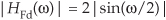
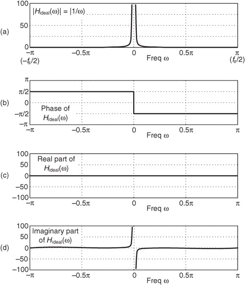
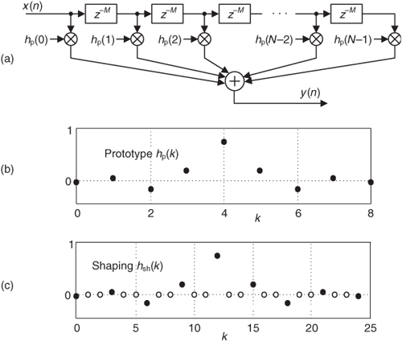
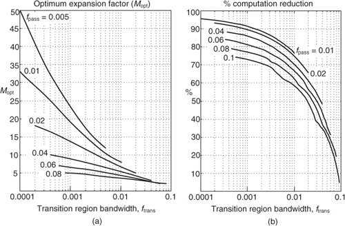
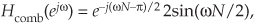
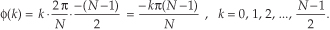
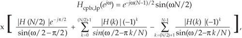
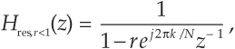
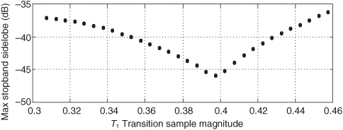

7 Specialized Digital Networks and Filters
We begin this chapter by presenting three useful digital networks—differentiators, integrators, and matched filters—that are common in the world of DSP. Beyond generic applications that require derivatives to be computed, differentiators are a key component of FM (frequency modulation) demodulation. A common application of integration is computing the integral of stock market prices over some period of days to determine trends in stock price data. Matched filters are used to detect the arrival of a specific discrete signal sequence, such as a radar return signal.
Later in this chapter we introduce two specialized implementations of finite impulse response (FIR) filters: interpolated lowpass FIR filters and frequency sampling filters. The common thread between these two FIR filter types is that they’re lean mean filtering machines. They wring every last drop of computational efficiency from a guaranteed-stable linear-phase filter. In many lowpass filtering applications these FIR filter types can attain greatly reduced computational workloads compared to the traditional Parks-McClellan-designed FIR filters discussed in Chapter 5.
We discuss this chapter’s specialized digital networks and FIR filters now because their behavior will be easier to understand using the z-transform concepts introduced in the last chapter.
7.1 Differentiators
This section focuses on simple tapped-delay line (FIR) differentiators. The idea of differentiation is well defined in the world of continuous (analog) signals, but the notion of derivatives is not strictly defined for discrete signals. However, fortunately we can approximate the calculus of a derivative operation in DSP. To briefly review the notion of differentiation, think about a continuous sinewave, whose frequency is ω radians/second, represented by
The derivative of that sinewave is
So the derivative of a sinewave is a cosine wave whose amplitude is proportional to the original sinewave’s frequency. Equation (7-1) tells us that an ideal digital differentiator’s frequency magnitude response is a straight line linearly increasing with frequency ω as shown in Figure 7-1(a). The differentiator’s phase is that shown in Figure 7-1(b), where the digital frequency ω = π radians/sample is equivalent to half the signal data sample rate in Hz (fs/2).
Figure 7-1 Ideal differentiator frequency response: (a) magnitude; (b) phase in radians; (c) real part; (d) imaginary part.
Given the magnitude and phase response of our ideal digital differentiator, we can draw the real and imaginary parts of its frequency response as shown in Figures 7-1(c) and 7-1(d). (The real part of the response is identically zero.) What we can say is that our ideal differentiator has the simple frequency response described, in rectangular form, by
With these thoughts in mind, let’s see how we can build a digital differentiator. We start by exploring two simple discrete-time FIR (nonrecursive) differentiators: a first-difference and a central-difference differentiator. They are computationally simple schemes for approximating the derivative of an x(n) time-domain sequence with respect to time.
7.1.1 Simple Differentiators
With respect to the x(n) samples in Figure 7-2(a), the first-difference differentiator is simply the process of computing the difference between successive x(n) samples. (While DSP purists prefer to use the terminology digital differencer, we’ll use the popular term differentiator for our purposes.) If we call yFd(n) the output of a first-difference differentiator, then yFd(n) is
Figure 7-2 Simple differentiators.
For the x(n) samples in Figure 7-2(b), the central-difference differentiator is the process of computing the average difference between alternate pairs of x(n) samples. If we call yCd(n) the output of a central-difference differentiator, then yCd(n) is
The two simple differentiators are implemented with tapped-delay line structures, just like our standard FIR filters in Chapter 5, as shown in Figure 7-2(c). (In fact, the two differentiators are merely two different forms of a comb filter, as discussed in detail in Section 7.5.1, and this is why differentiators are often called differentiating filters.) So what’s the difference (no pun intended) between these two simple differentiators? They are different with respect to their frequency responses, which we now investigate.
The first-difference differentiator is the most fundamental notion of digital differentiation, i.e., computing the difference between successive samples of a discrete sequence. The problem with this differentiator is that many real-world signals have high-frequency spectral components consisting of noise, and the first-difference differentiator amplifies that noise. The frequency magnitude response of a first-difference differentiator is

as shown by the dashed curve in Figure 7-3, where it has the characteristic of a highpass filter. (For comparison, we show an ideal differentiator’s straight-line |HIdeal(ω)| = ω magnitude response in Figure 7-3.) Looking at that dashed curve, we see how the first-difference differentiator tends to amplify high-frequency spectral components, and this may be detrimental because real-world signals often contain high-frequency noise.
Figure 7-3 Frequency magnitude responses of simple differentiators.
The central-difference differentiator’s |HCd(ω)| frequency magnitude response, on the other hand, is
as shown by the dotted curve in Figure 7-3, and this differentiator can be useful in that it tends to attenuate high-frequency (noise) spectral components. Looking at the |HCd(ω)| curve, we see that the price we pay for that high-frequency attenuation is a reduction in the frequency range over which the central-difference differentiator approaches an ideal differentiator’s linear |HIdeal(ω)|. The central-difference differentiator’s linear range is from 0 to only, say, 0.2π radians/sample (0.1fs Hz). The useful operating frequency ranges of the first-difference and central-difference differentiators are fairly narrow. This means the differentiators are only accurate when the spectral content of the input signal is low in frequency with respect to the input signal’s fs sample rate.
Another dissimilarity between the Figure 7-2(c) differentiators is their group delay. Because the impulse response (coefficients) of these tapped-delay line networks are antisymmetrical, both differentiators have linear phase responses, and thus both networks have a constant time delay (delay between the input and output, also called group delay). Like the tapped-delay line FIR filters in Chapter 5, antisymmetrical-coefficient differentiators have a group delay (measured in samples) determined by

where D is the number of unit-delay elements in their tapped-delay lines. (D can also be viewed as one less than the length of the impulse response of a differentiator.) Hence the first-difference differentiator, where D = 1, has an input-to-output delay of 1/2 = 0.5 samples. The central-difference differentiator, where D = 2, has a group delay of 2/2 = 1 sample. Whether or not a differentiator’s time delay is an integer number of samples is very important in applications where multiple-signal sequences must be aligned (synchronized) in time. (An example of this integer-delay differentiation issue is the FM demodulator discussion in Section 13.22.)
DSP folk have improved, in certain respects, upon the above two computationally simple differentiators in an attempt to (1) extend the linear operating frequency range, (2) continue to attenuate high-frequency spectral components, and (3) keep the number of arithmetic computations as low as possible. It is to those specialized differentiators that we now turn our attention.
7.1.2 Specialized Narrowband Differentiators
DSP pioneer Richard Hamming provided the following
as an expression to compute the coefficients of what he called “low-noise Lanczos,” differentiating filters having 2M+1 coefficients[1]. Variable k, the integer index of those coefficients, ranges from −M to M. If we set M = 1 in Eq. (7-8), we obtain the coefficients of the standard central-difference differentiator in Figure 7-2(c). Assigning M = 2 to Eq. (7-8) yields the coefficients
for a five-coefficient differentiator whose |HL(ω)| magnitude response is the dotted curve in Figure 7-4. The hL(k) differentiator in Eq. (7-9) is of interest because if we’re willing to multiply those coefficients by 10, we have a high-gain differentiator requiring only two multiplies per output sample. (Happily, those multiplications can be implemented with a binary arithmetic left shift, thus eliminating the multiplications altogether.) The disadvantage of this hL(k) differentiator is that its linear operating frequency range is the smallest of any differentiator we’ve considered so far.
Figure 7-4 Frequency magnitude responses of Lanczos differentiators.
Hamming presented two expressions for what he called “super Lanczos low-noise differentiators.” The first expression yielded the five-coefficient differentiator defined by
whose normalized |HSL1(ω)| magnitude response is the long-dash curve in Figure 7-4. The hSL1(k) differentiator has a wider linear operating frequency range than the hL(k) differentiator, but at the expense of degraded high-frequency attenuation. However, hSL1(k) is also of interest because if we’re willing to multiply the coefficients by 6, we again have a high-gain differentiator requiring only two multiplies per output sample. (Again, those multiplications by ±8 can be implemented with binary arithmetic left shifts to eliminate the multiplication operations.)
Hamming’s second expression for a super Lanczos low-noise differentiator generated the seven-coefficient differentiator defined by
whose normalized |HSL2(ω)| magnitude response is the short-dash curve in Figure 7-4. In terms of linear operating frequency range and high-frequency attenuation, the hSL2(k) differentiator is a reasonable compromise between the hL(k) and hSL1(k) differentiators. Notice how the hSL2(k) differentiator has a good high-frequency noise attenuation characteristic. Then again, in one respect, the hSL2(k) differentiator is not all that super because it requires six multiplies per output sample. (We can do better. Section 13.38 presents a very computationally efficient narrowband differentiator whose linear operating frequency range exceeds that of the hSL1(k) differentiator.)
With the exception of the first-difference differentiator, after accounting for their constant integer group delays, all of the above differentiators achieve the ideal Hideal(ω) phase response in Figure 7-1(b). In the next section we introduce high-performance wideband differentiators.
7.1.3 Wideband Differentiators
Nonrecursive discrete-time differentiators having wider linear operating frequency ranges than the above simple differentiators can be built. All we must do is find the coefficients of a general wideband differentiator whose frequency magnitude response is shown in Figure 7-5(a), having a cutoff frequency of ωc.
Figure 7-5 Frequency response of a general wideband differentiator: (a) desired magnitude response; (b) 30 hgen(k) coefficients; (c) actual magnitude response.
We can derive an equation defining the hgen(k) coefficients of a general wideband differentiator by defining those coefficients to be the inverse Fourier transform of our desired frequency response from Eq. (7-2) of Hideal(ω) = jω for continuous ω defined over the range of −ωc≤ω≤ωc. Following this strategy, the coefficients of our general differentiator are given by
We can perform the integration in Eq. (7-12) using the dreaded (but useful) integration by parts method, or by searching our math reference books for a closed-form integral expression in the form of Eq. (7-12)[2]. Being successful in this second approach, we find that the integral of (ωejωk)dω is (ejωk) (jωk−1)/(jk)2. Using this information, we can write

where integer index k is −∞≤k≤∞, and k ≠ 0.
The real-valued hgen(k) in Eq. (7-13) can be used to compute the coefficients of a tapped-delay line digital differentiator. This expression, however, is based on the notion that we need an infinite number of differentiator coefficients to achieve the desired response in Figure 7-5(a). Because implementing an infinite-tap differentiator is not possible in our universe, Figure 7-5(b) shows Eq. (7-13) limited (truncated) to a manageable 30 coefficients, and Figure 7-5(c) provides the frequency magnitude response of that 30-tap differentiator with ωc = 0.85π. (The ripples in that magnitude response are to be expected once we think about it. Truncation in one domain causes ripples in the other domain, right?)
As a brief aside, if we set ωc = π in Eq. (7-13), the coefficients of an N-coefficient differentiator become
where −(N−1)/2≤k≤(N−1)/2, and k ≠ 0. When index k = 0, hωc=π(0) is set to zero. Equation (7-14) is by far the most popular form given in the standard DSP textbooks for computing digital differentiator coefficients. Using Eq. (7-14), however, is only valid for even-order (N is odd) differentiators, and it is applicable only when the cutoff frequency is ωc = π (fs/2 Hz).
So where do we stand regarding these wideband differentiators? We’ve obtained Eq. (7-13) for computing the coefficients of a general wideband differentiator. Unfortunately that expression has a time-domain index (k) having negative values, which can be inconvenient to model using commercial signal processing software. We’ve discussed the widely disseminated Eq. (7-14) and mentioned its limitations. Again, we can do better.
For a more useful form of an hgen(k) expression for an arbitrary-length N-tap differentiator we propose the following:
where M = (N−1)/2, and 0≤k≤N−1. For odd N we set hgen((N−1)/2), the center coefficient, to zero. Eq. (7-15) looks a bit messy, but it’s quite practical because
• the differentiator passband width, ωc, is a design variable, and not fixed at ωc = π as in Eq. (7-14);
• the number of taps, N, can be odd or even; and
• the coefficient index k is never negative.
Fortunately, because of the range of index k, Eq. (7-15) is straightforward to model using commercially available signal processing software.
7.1.4 Optimized Wideband Differentiators
For completeness, we point out that the widely available Parks-McClellan algorithm can be used to design wideband digital differentiators whose performance is superior to those produced by Eq. (7-15) when the number of taps N is greater than, say, 25. That behavior is illustrated in Figure 7-6, where the solid curve shows the frequency magnitude response of an N = 30 Parks-McClellan-designed differentiator for ωc = 0.85π, and the bold dashed curve is an N = 30 differentiator designed using Eq. (7-15).
Figure 7-6 Frequency magnitude responses of 30-tap wideband differentiators.
What the DSP pioneers found, in studying the Parks-McClellan algorithm, is that it computes coefficients that provide more accurate differentiation when N is even as opposed to when N is odd. (However, we must keep in mind that the group delay through an even-tap differentiator is not an integer number of samples, and this could be troublesome in systems that require time synchronization among multiple signals.) Design curves showing the relative error for various-length even- and odd-N Parks-McClellan differentiators versus ωc are available[3,4].
Of course, windowing a wideband differentiator’s coefficients, using one of the common window sequences described in Chapters 3 and 5, will greatly reduce the ripples in a differentiator’s magnitude response. (Windowing in one domain reduces ripples in the other domain, right?) Improved magnitude response linearity, through time-domain windowing, comes at the expense of degrading the sharpness of the response’s transition region near ωc.
7.2 Integrators
The idea of integration is well defined in the domain of continuous (analog) signals, but not so clearly defined in the world of discrete signals. With that said, here we discuss approximating continuous integration by using digital filters that perform numerical integration of sampled signals. We’ll discuss digital integration networks whose outputs estimate the area under a continuous curve such as the x(t) function shown in Figure 7-7(a).
Figure 7-7 Integrator areas of summation.
7.2.1 Rectangular Rule Integrator
One simple way to estimate, to approximate, the area under the x(t) curve is to merely sum the x(n) samples. Such a rectangular rule integrator computes the sum of the shaded rectangles shown in Figure 7-7(b). In the time domain we define the rectangular rule integrator, a running summation, as
where the current sum, yRe(n), is the previous yRe(n−1) sum plus the current input sample x(n). When n = 2, for example, Eq. (7-16) adds the area under the right-side shaded rectangle shown in Figure 7-7(b) to the previous sum yRe(1) to compute yRe(2). The height and width of that right-side shaded rectangle are x(2) and one, respectively.
The frequency response of this rectangular rule integrator is
7.2.2 Trapezoidal Rule Integrator
A useful area integration estimation scheme is the trapezoidal rule defined by
When n = 2, for example, Eq. (7-17) computes the area (the average of x(2) + x(1)) under the right-side shaded trapezoid shown in Figure 7-7(c) and adds that value to the previous yTr(1) to compute yTr(2). The frequency response of the trapezoidal rule integrator is
7.2.3 Simpson’s Rule Integrator
A popular discrete-time integration scheme is Simpson’s rule defined by
where three samples are used to compute the area under the single shaded curve in Figure 7-7(d). The frequency response of the Simpson’s rule integrator is
(Simpson’s rule is named after the eighteenth-century English mathematician Thomas Simpson. Oddly enough, Simpson’s rule was actually developed by Sir Isaac Newton rather than Simpson. But don’t hold that against Simpson because the famous iterative method for finding the roots of a polynomial, called Newton’s method, was developed by Simpson!)
The above three time-domain integration approximations were developed using the principles of polynomial curve fitting where Simpson’s rule fits three signal samples to a second-order polynomial in x, the trapezoidal rule fits two samples to a first-order polynomial in x, and the rectangular rule uses a single sample in a zero-order polynomial in x.
7.2.4 Tick’s Rule Integrator
For completeness, we point out an integration approximation similar to Simpson’s rule that you may encounter in the literature of DSP called Tick’s rule. It’s defined as
having a frequency response given by
The Tick’s rule integrator was designed to be especially accurate over the low-frequency range of 0≤ω≤π/2 radians/sample (zero to fs/4 Hz) with little concern for its accuracy at higher frequencies[5].
7.2.5 Integrator Performance Comparison
OK, so how well do the above discrete integrators perform? We can measure their performance by comparing their behavior to an ideal continuous (analog) integrator. Doing so, we first recall that the integral of the continuous function cos(ωt) is
telling us that if we apply a sinusoid to an ideal integrator, the output of the integrator will be a sinusoid, phase-shifted by −π/2 radians (−90°), whose amplitude is reduced by a factor of 1/ω. Thus the frequency magnitude response of an ideal integrator is |Hideal| = |1/ω| as shown in Figure 7-8(a), and the integrator’s phase is that shown in Figure 7-8(b), where the digital frequency ω = π radians/sample is equivalent to half the signal data sample rate in Hz (fs/2).
Figure 7-8 Ideal integrator frequency response: (a) magnitude; (b) phase in radians; (c) real part; (d) imaginary part.

The frequency magnitude responses of an ideal integrator and our four digital integrators are shown in Figure 7-9 over various bandwidths in the positive-frequency range of 0≤ω≤π. For ease of comparison, the magnitude curves are all normalized so that their peak values, in the vicinity of ω = 0, are unity. (Note that the ideal integrator’s response curve in Figure 7-9(b) is obscured by the Simpson’s rule and Tick’s rule curves.) What we see from Figure 7-9 is that the various integrators have very little difference over the ω frequency range of 0 to π/2 radians/sample (zero to fs/4 Hz), but above that range there are meaningful differences that we’ll discuss in a moment.
Figure 7-9 Normalized frequency magnitude responses of four integrators.
The magnitude response curves in Figure 7-9 are a bit difficult to interpret when a linear magnitude axis is used. With that thought in mind, Figure 7-10 shows the various integrators’ percent absolute errors using logarithmic axis scaling. We defined the percent absolute error as
Figure 7-10 Integrator absolute errors in percent.
Looking at the error curves in Figure 7-10 might cause you to think, “These integrators aren’t very accurate. For example, the Simpson’s rule integrator has roughly a 7 percent error at ω = 0.5π (fs/4 Hz).” Well, the situation is not as bad as it first appears. Looking at the ideal integrator’s response in Figure 7-9(a), we must realize that a 7 percent error of the small magnitude response values near ω = 0.5π is not nearly as significant as a 7 percent error for the larger magnitude response values below ω = 0.1π. So this means our simple integrators are quite accurate at low frequencies where we most need high accuracy.
What we learn from Figure 7-10 is that all of the digital integrators have good accuracy at low frequencies, with the Tick’s rule and Simpson’s rule integrators being the most accurate. (The phrase “low frequencies” means that the spectral components of the function, the signal, we are trying to integrate are low in frequency relative to the fs sample rate.) However, if the integrators’ input signals have appreciable noise spectral components near fs/2 Hz, the Tick’s rule and Simpson’s rule integrators will amplify that noise because those integrators have z-domain transfer function poles (infinite gain) at z = −1, corresponding to a cyclic frequency of fs/2 Hz. In such high-frequency noise scenarios the rectangular or trapezoidal rule integrators should be used because they provide improved attenuation of spectral components in the vicinity of fs/2 Hz.
The integrators that we’ve discussed are interesting because they are recursive networks and they all have linear phase. However, only the trapezoidal, Simpson’s, and Tick’s rule integrators achieve the ideal Hideal(ω) phase response in Figure 7-8(b).
The above integrators all have z-domain transfer function poles at z = 1, corresponding to a cyclic frequency of zero Hz, and this has an important consequence when we implement integrators in digital hardware. Those poles force us to ensure that the numerical format of our integrator hardware can accommodate summation results when the x(n) input sequence has a nonzero average value (a constant amplitude bias). Stated in different words, the widths of our binary data registers must be large enough to guarantee that any nonzero amplitude bias on x(n) will not cause numerical overflow and corrupt the data within an integrator. Chapter 10’s discussion of cascaded integrator-comb (CIC) filters elaborates on this integrator data register width issue.
7.3 Matched Filters
In this section we introduce a signal processing operation known as matched filtering. A matched filter is a process that maximizes the signal-power-to-noise-power ratio (SNR) of its y(t) output when a specified xs(t) signal of interest arrives at its input. Such a process is widely used in radar, sonar, oil exploration, digital communications systems, and frequency-domain processing of two-dimensional images. Those systems are designed to reliably detect (recognize) if, and at what instant in time or position in space, a well-defined s(t) signal of interest arrived at their inputs.
Matched filtering, for continuous signals, is depicted in Figure 7-11(a). In that figure the system’s xin(t) input signal is an xs(t) signal of interest, which may be a radar signal or perhaps a small portion of a digital communications signal, contaminated with an xn(t) noise signal. The matched filter’s task is to maximize the SNR of the y(t) signal so that reliable detection of xs(t) can be performed.
Figure 7-11 Matched filtering: (a) continuous signal implementation; (b) digital implementation with h(k) impulse response.
7.3.1 Matched Filter Properties
So the question is “What should the frequency response of the matched filter be to maximize our chances of detecting the presence of xs(t) in the noisy xin(t) signal?” The answer can be found in most communications textbooks[6], and here’s how we interpret that answer. Given the S(f) spectrum of xs(t), the desire to maximize the SNR of y(t), lots of calculus, plus an application of Schwarz’s inequality, the optimum H(f) frequency response of the matched filter can be shown to be
where T is the time duration of the xs(t) signal measured in seconds, and * signifies conjugation. Equation (7-22) tells us that the optimum H(f) frequency response of the continuous matched filter should be the complex conjugate of the spectrum of our signal of interest multiplied by a phase shift that’s a linear function of frequency. Stated in different words, the time-domain impulse response of the optimum matched filter is the inverse Fourier transform of S*(f) shifted in the negative-time direction by T seconds. We now provide a physical meaning of all of this as we determine how to implement a matched filter in discrete-time sampled systems.
To show how to build a digital (discrete-time) matched filter, as shown in Figure 7-11(b), first we need to determine the h(k) impulse response of the filter. Let’s make the following assumptions:
• Our discrete signal of interest is an N-sample xs(n) sequence.
• S(m) is the N-point discrete Fourier transform (DFT) of xs(n).
• m is the discrete frequency index 0 ≤ m ≤ N−1.
• The xin(n) data input sample rate is fs samples/second.
Under these assumptions we convert the continuous frequency f in Eq. (7-22) to the DFT’s discrete frequencies of mfs/N to express the digital matched filter’s H(m) discrete frequency response as
where T is the time duration of the xs(n) signal. OK, our next step is to define T such that the inverse DFT of H(m), our desired h(k), is the inverse DFT of S*(m) shifted in the negative-time direction by an amount equal to the time duration of xs(n). This sounds a bit complicated, but it’s really not so bad, as we shall see.
To determine T in Eq. (7-23) we need to know how many sample periods (with 1/fs being one period) comprise the time duration of an N-sample xs(n) sequence. The answer is: The time duration of an N-sample discrete sequence is N−1 sample periods. (Readers should convince themselves that this is true.) So T in Eq. (7-23) is (N−1)/fs seconds, and we write the discrete frequency response of our discrete matched filter as
Finally, our discrete matched filter’s h(k) impulse response is the N-point inverse DFT of H(m), which, from Appendix C, is merely the straight time reversal (left-to-right flip) of xs(n). And there you have it—we express our optimum h(k) as
where k ranges from 0 to N−1. We struggled through the above process of developing Eq. (7-25) so the reader would understand the origin of our expression for h(k).
7.3.2 Matched Filter Example
As an example of matched filtering, Figure 7-12(a) shows an N = 9 sample xs(n) signal-of-interest sequence and the optimum h(k) matched filter impulse response. If the matched filter’s xin(n) input contains two occurrences of xs(n), as shown in Figure 7-12(b), the filter’s y(n) output will be the two pulses (each one symmetrical) shown in Figure 7-12(c). Our signal recognition process is then making sure the threshold detection process in Figure 7-11(a) detects the high-level peaks in y(n). It’s useful to remind ourselves that the xin(n) sequence enters the filter in a reversed order from that shown in Figure 7-12(b). That is, sample xin(0) enters the filter first, followed by the xin(1) sample, and so on. So the xs(n) sequences within xin(n), arriving at the filter’s input, are in the same left-right orientation as the filter’s h(k) impulse response.
Figure 7-12 Matched filtering example: (a) signal of interest xs(n) and h(k); (b) filter xin(n) input; (c) filter y(n) output.
To show the value of matched filtering, Figure 7-13(a) shows an xin(n) input sequence, having two occurrences of the previous xs(n), but this time badly contaminated with random noise. It’s very difficult to see the two xs(n) sequences in xin(n). In this noisy-signal case the filter’s y(n) output, shown in Figure 7-13(b), still distinctly exhibits the two peaks similar to the noise-free example in Figure 7-12(c). Actually, we should call the two peaks in Figure 7-12(c) “correlation peaks” because our matched filter is performing a correlation between the xin(n) input signal and the predefined xs(n) signal of interest. The y(n) output is not the xs(n) signal of interest—y(n) is a quantitative measure of the similarity between the xin(n) input signal and xs(n).
Figure 7-13 Matched filtering example: (a) filter xin(n) input contaminated with noise; (b) filter y(n) output.
7.3.3 Matched Filter Implementation Considerations
There are a number of important topics to consider when implementing matched filters. They are:
• Matched filters are most conveniently implemented with tapped-delay line FIR filters like those we studied in Chapter 5. The h(k) sequence merely becomes the coefficients of the FIR filter. Again, our digital matched filter performs convolution of xin(n) and h(k), which is equivalent to performing correlation between xin(n) and xs(n). In the 1980s the TRW LSI Products organization produced an integrated circuit that contained a 32-tap FIR architecture used for matched filtering. The chip was justifiably called a digital correlator.
• As we discussed in Section 5.9.2, time-domain convolution can be implemented by way of frequency-domain multiplication. When the lengths of xs(n) and h(k) are large (say, N > 80) and forward and inverse FFTs are used, frequency-domain multiplication may be more computationally efficient than traditional time-domain convolution.
• The H(m) frequency response given in Eq. (7-23) is based on two assumptions: (1) that the xn(n) noise is truly random, having a flat-level broadband power spectrum, which means there is no correlation between one xn(n) noise sample and any subsequent xn(n+k) sample in Figure 7-11(b); and (2) the xn(n) noise’s probability density function (PDF) is Gaussian in shape. Such noise is referred to as additive white noise (AWN). If the xn(n) noise is not AWN, for example, when xs(n) is a radio signal and xn(n) is a high-level intentional jamming signal, or when xs(n) is a single data symbol of a digital communications signal contaminated with some previous-in-time data symbol, then Eq. (7-22) must be modified. References [7–9] provide additional information regarding this non-AWN scenario.
• Matched filtering is easy to perform. However, the detection threshold operation in Figure 7-11, to detect the peaks in Figure 7-13(b), can become difficult to implement reliably depending on the nature of xs(n), xn(n), and the SNR of xin(n). If we set the threshold too high, then we reduce our probability of detection by risking failure to detect xs(n). If we set the threshold too low, then we increase our probability of false alarm by incorrectly identifying a noise spike in y(n) as an occurrence of our desired xs(n). Advanced signal processing textbooks, by way of statistics and an abundance of probability theory, cover these topics. Representative descriptions of these concepts are provided in references[10,11].
7.4 Interpolated Lowpass FIR Filters
In this section we cover a class of digital filters, called interpolated FIR filters, used to build narrowband lowpass FIR filters that can be more computationally efficient than the traditional Parks-McClellan-designed tapped-delay line FIR filters that we studied in Chapter 5. Interpolated FIR filters can reduce traditional narrowband lowpass FIR filter computational workloads by more than 80 percent. In their description, we’ll introduce interpolated FIR filters with a simple example, discuss how filter parameter selection is made, provide filter performance curves, and go through a simple lowpass filter design example showing their computational savings over traditional FIR filters[12,13].
Interpolated FIR (IFIR) filters are based upon the behavior of an N-tap nonrecursive linear-phase FIR filter when each of its unit delays is replaced with M unit delays, with the expansion factor M being an integer, as shown in Figure 7-14(a). If the hp(k) impulse response of a 9-tap FIR filter is that shown in Figure 7-14(b), the impulse response of an expanded FIR filter, where for example M = 3, is the hsh(k) in Figure 7-14(c). The M unit delays result in the zero-valued samples, the white dots, in the hsh(k) impulse response. Our variable k is merely an integer time-domain index where 0 ≤ k ≤ N−1. To define our terminology, we’ll call the original FIR filter the prototype filter—that’s why we used the subscript “p” in hp(k)—and we’ll call the filter with expanded delays the shaping subfilter. Soon we’ll see why this terminology is sensible.
Figure 7-14 Filter relationships: (a) shaping FIR filter with M unit delays between the taps; (b) impulse response of a prototype FIR filter; (c) impulse response of an expanded-delay shaping FIR filter with M = 3.

We can express a prototype FIR filter’s z-domain transfer function as
where Np is the length of hp. The transfer function of a general shaping FIR filter, with z in Eq. (7-26) replaced with zM, is
Later we’ll see why we chose to provide Eqs. (7-26) and (7-27). If the number of coefficients in the prototype filter is Np, the shaping filter has Np nonzero coefficients and an expanded impulse response length of
Later we’ll see how Nsh has an important effect on the implementation of IFIR filters.
The frequency-domain effect of those M unit delays is shown in Figure 7-15. As we should expect, an M-fold expansion of the time-domain filter impulse response causes an M-fold compression (and repetition) of the frequency-domain |Hp(f)| magnitude response as in Figure 7-15(b). While Hp(f) has a single passband, Hsh(f) has M passbands. (The frequency axis of these curves is normalized to the fs filter input signal sample rate. For example, the normalized frequency fpass is equivalent to a frequency of fpassfs Hz.) Those repetitive passbands in |Hsh(f)| centered about integer multiples of 1/M (fs/M Hz) are called images, and on them we now focus our attention.
Figure 7-15 IFIR filter magnitude responses: (a) the prototype filter; (b) shaping subfilter; (c) image-reject subfilter; (d) final IFIR filter.
If we follow the shaping subfilter with a lowpass image-reject subfilter, Figure 7-15(c), whose task is to attenuate the image passbands, we can realize a multistage filter whose frequency response is shown in Figure 7-15(d). The resultant |Hifir(f)| frequency magnitude response is, of course, the product

The structure of the cascaded subfilters is the so-called IFIR filter shown in Figure 7-16(a), with its interpolated impulse response given in Figure 7-16(b).
Figure 7-16 Lowpass interpolated FIR filter: (a) cascade structure; (b) resultant impulse response.
If the original desired lowpass filter’s passband width is fpass, its stopband begins at fstop, and the transition region width is ftrans = fstop−fpass, then the prototype subfilter’s normalized frequency parameters are defined as
The image-reject subfilter’s frequency parameters are
The stopband attenuations of the prototype filter and image-reject subfilter are identical and set equal to the desired IFIR filter stopband attenuation. The word interpolated in the acronym IFIR is used because the image-reject subfilter interpolates samples in the prototype filter’s hp(k) impulse response, making the overall IFIR filter’s impulse response equal to the hifir(k) sequence in Figure 7-34(b). Note that hifir(k) does not represent the coefficients used in any FIR subfilter filter. Sequence hifir(k) is the convolution of the shaping and image-reject subfilters’ impulse responses (coefficients). Some authors emphasize this attribute by referring to the image-reject subfilter as an interpolator. The fs sample rate remains unchanged within an IFIR filter, so no actual signal interpolation takes place.
To give you an incentive to continue reading, the following example shows the terrific computational advantage of using IFIR filters. Consider the design of a desired linear-phase FIR filter whose normalized passband width is fpass = 0.1, its passband ripple is 0.1 dB, the transition region width is ftrans = 0.02, and the stopband attenuation is 60 dB. (The passband ripple is a peak-peak specification measured in dB.) With an expansion factor of M = 3, the |Hp(f)| frequency magnitude response of the prototype filter is shown in Figure 7-17(a). The normalized frequency axis for these curves is such that a value of 0.5 on the abscissa represents the cyclic frequency fs/2 Hz, half the sample rate. The frequency response of the shaping subfilter, for M = 3, is provided in Figure 7-17(b) with an image passband centered about (1/M) Hz. The response of the image-reject subfilter is the solid curve in Figure 7-17(c), and the response of the overall IFIR filter is provided in Figure 7-17(d).
Figure 7-17 Example lowpass IFIR filter magnitude responses: (a) the prototype filter; (b) shaping subfilter; (c) image-reject subfilter; (d) final IFIR filter.
Satisfying the original desired filter specifications in Figure 7-17(d) would require a traditional tapped-delay FIR filter with Ntfir = 137 taps, where the “tfir” subscript means traditional FIR. In our IFIR filter, the shaping and the image-reject subfilters require Np = 45 and Nir = 25 taps respectively, for a total of Nifir = 70 taps. We can define the percent reduction in computational workload (number of multiplies per filter output sample) of an IFIR filter, over a traditional tapped-delay line FIR filter, as
As such, the above example IFIR filter has achieved a multiplication computational workload reduction, over a traditional FIR filter, of
Figure 7-17 shows how the transition region width (the shape) of |Hifir(f)| is determined by the transition region width of |Hsh(f)|, and this justifies the decision to call hsh(k) the shaping subfilter.
7.4.1 Choosing the Optimum Expansion Factor M
The expansion factor M deserves our attention because it can have a profound effect on the computational efficiency of IFIR filters. To show this, had we used M = 2 in our Figure 7-17 example, we would have realized an IFIR filter described by the M = 2 row in Table 7-1. In that case the computation reduction over a conventional FIR filter is 43 percent. With M = 2, a reduced amount of frequency-domain compression occurred in Hsh(f), which mandated more taps in hsh(k) than were needed in the M = 3 case.
Table 7-1 IFIR Filter Computation Reduction versus M
Now had M = 4 been used, the computation reduction, over a single traditional tapped-delay line FIR filter, would only be 8 percent as shown in Table 7-1. This is because the Hsh(f) passband images would be so close together that a high-performance (increased number of taps) image-reject subfilter would be required. As so often happens in signal processing designs, there is a trade-off to be made. We would like to use a large value for M to compress the Hsh(f)’s transition region width as much as possible, but a large M reduces the transition region width of the image-reject subfilter, which increases the number of taps in hir(k) and its computational workload. In our Figure 7-17 IFIR filter example an expansion factor of M = 3 is optimum because it yields the greatest computation reduction over a traditional tapped-delay line FIR filter.
The optimum IFIR filter expansion factor was found by Mehrnia and Willson[14] to be
We’ll explore the meaning, and effects, of Eq. (7-33) in the next few pages, but first let’s determine the percent computation reduction afforded to us by IFIR filters.
7.4.2 Estimating the Number of FIR Filter Taps
To estimate the computation reduction achieved by using IFIR filters, an algorithm is needed to compute the number of taps, Ntfir, in a traditional tapped-delay line FIR filter. Several authors have proposed empirical relationships for estimating Ntfir for traditional tapped-delay line FIR filters based on passband ripple, stopband attenuation, and transition region width[15−17]. A particularly simple expression for Ntfir, giving results consistent with other estimates for passband ripple values near 0.1 dB, is
where Atten is the stopband attenuation measured in dB, and fpass and fstop are the normalized frequencies in Figure 7-15(d)[17]. (Again, by “normalized” we mean that the fpass and fstop frequency values are normalized to the filter input sample rate, fs, in Hz. For example, fpass = 0.1 is equivalent to a continuous-time frequency of fpass = 0.1fs Hz.) Likewise, the number of taps in the prototype and image-reject subfilters can be estimated using
7.4.3 Modeling IFIR Filter Performance
As it turns out, IFIR filter computational workload reduction depends on the expansion factor M, the passband width, and the transition region width of the desired IFIR filter. To show this, we substitute the above expressions for Ntfir, Np, and Nir into Eq. (7-32) and write
where ftrans = fstop−fpass.
Having Eqs. (7-33) and (7-35) available to us, we can now see the performance of IFIR filters. The optimum expansion factor curves from Eq. (7-33) are plotted, versus desired IFIR filter transition region width, for various values of passband width in Figure 7-18(a). When various optimum expansion factors are used in an IFIR filter design, the percent computation reduction, when an Mopt value is plugged into Eq. (7-35), is that shown in Figure 7-18(b).
Figure 7-18 IFIR filter performance versus desired transition region width for various passband widths: (a) optimum expansion factors; (b) percent computation reduction.

So in IFIR filter design, we use our desired filter transition region width and passband width values to determine the Mopt optimum expansion factor using either Eq. (7-33) or the curves in Figure 7-18(a). Given that Mopt value, we estimate our IFIR filter’s percent computation reduction from either Eq. (7-35) or the curves in Figure 7-18(b). We’ll go through an IFIR filter design example shortly.
7.4.4 IFIR Filter Implementation Issues
The computation reduction of IFIR filters is based on the assumption that they are implemented as two separate subfilters as in Figure 7-16. We have resisted the temptation to combine the two subfilters into a single filter whose coefficients are the convolution of the subfilters’ impulse responses. Such a maneuver would eliminate the zero-valued coefficients of the shaping subfilter, and we’d lose all our desired computation reduction.
The curves in Figure 7-18(a) indicate an important implementation issue when using IFIR filters. With decreasing IFIR filter passband width, larger expansion factors, M, can be used. When using programmable DSP chips, larger values of M require that a larger block of hardware data memory, in the form of a circular buffer, be allocated to hold a sufficient number of input x(n) samples for the shaping subfilter. The size of this data memory must be equal to at least Nsh as indicated in Eq. (7-28). Some authors refer to this data memory allocation requirement, to accommodate all the stuffed zeros in the hsh(k) impulse response, as a disadvantage of IFIR filters. This is a misleading viewpoint because, as it turns out, the Nsh length of hsh(k) is only a few percent larger than the length of the impulse response of a traditional FIR filter having the same performance as an IFIR filter. So from a data storage standpoint the price we pay to use IFIR filters is a slight increase in the size of memory to accommodate Nsh, plus the data memory of size Kir needed for the image-reject subfilter. In practice, for narrowband lowpass IFIR filters, Kir is typically less than 10 percent of Nsh.
When implementing an IFIR filter with a programmable DSP chip, the filter’s computation reduction gain can only be realized if the chip’s architecture enables zero-overhead looping through the circular data memory using an increment equal to the expansion factor M. That looping capability ensures that only the nonzero-valued coefficients of hsh(k) are used in the shaping subfilter computations.
In practice the shaping and image-reject subfilters should be implemented with a folded tapped-delay line FIR structure, exploiting their impulse response symmetry, to reduce the number of necessary multiplications by a factor of two. (See Section 13.7.) Using a folded structure does not alter the performance curves provided in Figure 7-18. Regarding an IFIR filter’s implementation in fixed-point hardware, its sensitivity to coefficient quantization errors is no greater than the errors exhibited by traditional FIR filters[12].
7.4.5 IFIR Filter Design Example
The design of practical lowpass IFIR filters is straightforward and comprises four steps:
1. Define the desired lowpass filter performance requirements.
2. Determine a candidate value for the expansion factor M.
3. Design and evaluate the shaping and image-reject subfilters.
4. Investigate IFIR performance for alternate expansion factors near the initial M value.
As a design example, refer to Figure 7-15(d) and assume we want to build a lowpass IFIR filter with fpass = 0.02, a peak-peak passband ripple of 0.5 dB, a transition region bandwidth of ftrans = 0.01 (thus fstop = 0.03), and 50 dB of stopband attenuation. First, we find the ftrans = 0.01 point on the abscissa of Figure 7-18(a) and follow it up to the point where it intersects the fpass = 0.02 curve. This intersection indicates that we should start our design with an expansion factor of M = 7. (The same intersection point in Figure 7-18(b) suggests that we can achieve a computational workload reduction of roughly 75 percent.)
With M = 7, and applying Eq. (7-30), we use our favorite traditional FIR filter design software to design a linear-phase prototype FIR filter with the following parameters:
fp-pass = M(0.02) = 0.14,
passband ripple = (0.5)/2 dB = 0.25 dB,
fp-stop = M(0.03) = 0.21, and
stopband attenuation = 50 dB.
(Notice how we used our cascaded filters’ passband ripple rule of thumb from Section 6.8.1 to specify the prototype filter’s passband ripple to be half our final desired ripple, and we’ll do the same for the image-reject subfilter.) Such a prototype FIR filter will have Np = 33 taps and, from Eq. (7-28), when expanded by M = 7 the shaping subfilter will have an impulse response length of Nsh = 225 samples.
Next, using Eq. (7-31), we design an image-reject subfilter having the following parameters:
fir-pass = fpass = 0.02,
passband ripple = (0.5)/2 dB = 0.25 dB,
fir-stop = 1/M −fstop = 1/7 − 0.03 = 0.113, and
stopband attenuation = 50 dB.
This image-reject subfilter will have Nir = 27 taps and when cascaded with the shaping subfilter will yield an IFIR filter requiring 60 multiplications per filter output sample. The frequency response of the IFIR filter is shown in Figure 7-19(a), with passband response detail provided in Figure 7-19(b).
Figure 7-19 IFIR filter design example magnitude responses: (a) full response; (b) passband response detail.
A traditional FIR filter satisfying our design example specifications would require approximately Ntfir = 240 taps. Because the IFIR filter requires only 60 multiplications per output sample, using Eq. (7-32), we have realized a computational workload reduction of 75 percent. The final IFIR filter design step is to sit back and enjoy a job well done.
Further modeling of our design example for alternate expansion factors yields the IFIR filter performance results in Table 7-2. There we see how the M expansion factors of 5 through 8 provide very similar computational reductions and Nsh-sized data storage requirements for the shaping subfilter.
Table 7-2 Design Example Computation Reduction versus M
IFIR filters are suitable whenever narrowband lowpass linear-phase filtering is required, for example, the filtering prior to decimation for narrowband channel selection within wireless communications receivers, or in digital television. IFIR filters are essential components in sharp-transition wideband frequency-response masking FIR filters[18,19]. In addition, IFIR filters can also be employed in narrowband two-dimensional filtering applications.
Additional, and more complicated, IFIR design methods have been described in the literature. Improved computational workload reduction, on the order of 30 to 40 percent beyond that presented here, has been reported using an intricate design scheme when the Figure 7-16 image-reject subfilter is replaced with multiple stages of filtering[20].
If you “feel the need for speed,” there are additional ways to reduce the computational workload of IFIR filters. Those techniques are available in references [21] and [22]. We will revisit IFIR filters in Chapter 10 to see how they are used in sample rate conversion (decimation or interpolation) applications.
To conclude our linear-phase narrowband IFIR filter material, we reiterate that they can achieve significant computational workload reduction (as large as 90 percent) relative to traditional tapped-delay line FIR filters, at the cost of less than a 10 percent increase in hardware data memory requirements. Happily, IFIR implementation is a straightforward cascade of filters designed using readily available traditional FIR filter design software.
7.5 Frequency Sampling Filters: The Lost Art
This section describes a class of digital filters, called frequency sampling filters, used to implement linear-phase FIR filter designs. Although frequency sampling filters were developed over 35 years ago, the advent of the powerful Parks-McClellan tapped-delay line FIR filter design method has driven them to near obscurity. Thus in the 1970s frequency sampling filter implementations lost favor to the point where their coverage in today’s DSP classrooms and textbooks ranges from very brief to nonexistent. However, we’ll show how frequency sampling filters remain more computationally efficient than Parks-McClellan-designed filters for certain applications where the desired passband width is less than roughly one-fifth the sample rate. The purpose of this material is to introduce the DSP practitioner to the structure, performance, and design of frequency sampling filters, and to present a detailed comparison between a proposed high-performance frequency sampling filter implementation and its tapped-delay line FIR filter equivalent. In addition, we’ll clarify and expand the literature of frequency sampling filters concerning the practical issues of phase linearity, filter stability, gain normalization, and computational workload using design examples.
Frequency sampling filters were founded upon the fact that a traditional N-tap nonrecursive tapped-delay line (direct convolution) FIR filter as shown in Figure 7-20(a) can be implemented as a comb filter in cascade with a bank of N complex resonators as shown in Figure 7-20(b). We call the filter in Figure 7-20(b) a general frequency sampling filter (FSF), and its equivalence to the nonrecursive FIR filter has been verified[23−25]. While the h(k) coefficients, where 0 < k < N−1, of N-tap nonrecursive FIR filters are typically real-valued, in general they can be complex, and that’s the initial assumption made in equating the two filters in Figure 7-20. The H(k) gain factors, the discrete Fourier transform of the h(k) time-domain coefficients, are, in the general case, complex values represented by |H(k)|ejϕ(k).
Figure 7-20 FIR filters: (a) N-tap nonrecursive tapped-delay line; (b) equivalent N-section frequency sampling filter.
The basis of FSF design is the definition of a desired FIR filter frequency response in the form of H(k) frequency-domain samples, whose magnitudes are depicted as dots in Figure 7-21. Next, those complex H(k) sample values are used as gain factors following the resonators in the FSF structure (block diagram). If you haven’t seen it before, please don’t be intimidated by this apparently complicated FSF structure. We’ll soon understand every part of it, and how those parts work together.
Figure 7-21 Defining a desired filter response by frequency sampling.
Later we’ll develop the math to determine the interpolated (actual) frequency magnitude response |H(ejω)| of an FSF shown by the continuous curve in Figure 7-21. In this figure, the frequency axis labeling convention is a normalized angle measured in π radians/sample with the depicted ω frequency range covering 0 to 2π radians/sample, corresponding to a cyclic frequency range of 0 to fs, where fs is the sample rate in Hz.
To avoid confusion, we remind the reader that there is a popular nonrecursive FIR filter design technique known as the frequency sampling design method described in the DSP literature. That design scheme begins (in a manner similar to an FSF design) with the definition of desired H(k) frequency response samples, then an inverse discrete Fourier transform is performed on those samples to obtain a time-domain impulse response sequence that’s used as the h(k) coefficients in the nonrecursive N-tap FIR structure of Figure 7-20(a). In the FSF design method described here, the desired frequency-domain H(k) sample values are the coefficients used in the FSF structure of Figure 7-20(b) which is typically called the frequency sampling implementation of an FIR filter.
Although more complicated than nonrecursive FIR filters, FSFs deserve study because in many narrowband filtering situations they can implement a linear-phase FIR filter at a reduced computational workload relative to an N-tap nonrecursive FIR filter. The computation reduction occurs because, while all of the h(k) coefficients are used in the nonrecursive FIR filter implementation, most of the H(k) values will be zero-valued, corresponding to the stopband, and need not be implemented. To understand the function and benefits of FSFs, we start by considering the behavior of the comb filter and then review the performance of a single digital resonator.
7.5.1 Comb Filter and Complex Resonator in Cascade
A single section of a complex FSF is a comb filter followed by a single complex digital resonator as shown in Figure 7-22.
Figure 7-22 A single section of a complex FSF.
The 1/N gain factor following a resonator in Figure 7-20(b) is omitted, for simplicity, from the single-section complex FSF. (The effect of including the 1/N factor will be discussed later.) To understand the single-section FSF’s operation, we first review the characteristics of the nonrecursive comb filter whose time-domain difference equation is
with its output equal to the input sequence minus the input delayed by N samples. The comb filter’s z-domain transfer function is
The frequency response of a comb filter, derived in Section G.1 of Appendix G, is

with a magnitude response of |Hcomb(ejω)| = 2|sin(ωN/2)| whose maximum value is 2. It’s meaningful to view the comb filter’s time-domain impulse response and frequency-domain magnitude response as shown in Figure 7-23 for N = 8. The magnitude response makes it clear why the term comb is used.
Figure 7-23 Time- and frequency-domain characteristics of an N = 8 comb filter.
Equation (7-37) leads to a key feature of this comb filter; its transfer function has N periodically spaced zeros around the z-plane’s unit circle as shown in Figure 7-23(c). Each of those zeros, located at z(k) = ej2πk/N, where k = 0, 1, 2, . . ., N−1, corresponds to a magnitude null in Figure 7-23(b), where the normalized frequency axis is labeled from −π to +π radians/sample. Those z(k) values are the N roots of unity when we set Eq. (7-37) equal to zero, yielding z(k)N = (ej2πk/N)N = 1. We can combine the magnitude response (on a linear scale) and z-plane information in the three-dimensional z-plane depiction shown in Figure 7-24, where we see the intersection of the |Hcomb(z)| surface and the unit circle. Breaking the curve at the z = −1 point, and laying it flat, corresponds to the magnitude curve in Figure 7-23(b).
Figure 7-24 The z-plane frequency magnitude response of the N = 8 comb filter.
To preview where we’re going, soon we’ll build an FSF by cascading the comb filter with a digital resonator having a transfer function pole lying on top of one of the comb’s z-plane zeros, resulting in a linear-phase bandpass filter. With this thought in mind, let’s characterize the digital resonator in Figure 7-22.
The complex resonator’s time-domain difference equation is
where the angle ωr, −π ≤ ωr ≤ π determines the resonant frequency of our resonator. We show this by considering the resonator’s z-domain transfer function
and the resonator’s complex time-domain impulse response, for ωr = π/4, in Figure 7-25.
Figure 7-25 Single complex digital resonator impulse response with ωr = π/4.
The ωr = π/4 resonator’s impulse response is a complex sinusoid, the real part (a cosine sequence) of which is plotted in Figure 7-26(a), and can be considered infinite in duration. (The imaginary part of the impulse response is, as we would expect, a sinewave sequence.) The frequency magnitude response is very narrow and centered at ωr. The resonator’s Hres(z) has a single zero at z = 0, but what concerns us most is its pole, at z = ejωr, on the unit circle at an angle of ωr as shown in Figure 7-26(c). We can think of the resonator as an infinite impulse response (IIR) filter that’s conditionally stable because its pole is neither inside nor outside the unit circle.
Figure 7-26 Time- and frequency-domain characteristics of a single complex digital resonator with ωr = π/4.
We now analyze the single-section complex FSF in Figure 7-22. The z-domain transfer function of this FSF is the product of the individual transfer functions and H(k), or
If we restrict the resonator’s resonant frequency ωr to be 2πk/N, where k = 0, 1, 2, . . ., N−1, then the resonator’s z-domain pole will be located atop one of the comb’s zeros and we’ll have an FSF transfer function of
where the “ss” subscript means a single-section complex FSF. We can understand a single-section FSF by reviewing its time- and frequency-domain behavior for N = 32, k = 2, and H(2) = 1 as shown in Figure 7-27.
Figure 7-27 Time- and frequency-domain characteristics of a single-section complex FSF where N = 32, k = 2, and H(2) = 1.
Figure 7-27 is rich in information. We see that the complex FSF’s impulse response is a truncated complex sinusoid whose real part is shown in Figure 7-27(a). The positive impulse from the comb filter started the resonator oscillation at zero time. Then at just the right sample, N = 32 samples later, which is k = 2 cycles of the sinusoid, the negative impulse from the comb arrives at the resonator to cancel all further oscillation. The frequency magnitude response, being the Fourier transform of the truncated sinusoidal impulse response, takes the form of a sin(x)/x-like function. In the z-plane plot of Figure 7-27, the resonator’s pole is indeed located atop the comb filter’s k = 2 zero on the unit circle, canceling the frequency magnitude response null at 2πk/N = π/8 radians. (Let’s remind ourselves that a normalized angular frequency of 2πk/N radians/sample corresponds to a cyclic frequency of kfs/N, where fs is the sample rate in Hz. Thus the filter in Figure 7-27 resonates at fs/16 Hz.)
We can determine the FSF’s interpolated frequency response by evaluating the Hss(z) transfer function on the unit circle. Substituting ejω for z in Hss(z) in Eq. (7-42), as detailed in Appendix G, Section G.2, we obtain an Hss(ejω) frequency response of
Evaluating |Hss(ejω)| over the frequency range of −π < ω < π yields the curve in Figure 7-27(b). Our single-section FSF has linear phase because the e−jπk/N term in Eq. (7-43) is a fixed phase angle based on constants N and k, the angle of H(k) is fixed, and the e−jω(N−1)/2 phase term is a linear function of frequency (ω). As derived in Appendix G, Section G.2, the maximum magnitude response of a single-section complex FSF is N when |H(k)| = 1, and we illustrate this fact in Figure 7-28.
Figure 7-28 The z-plane frequency magnitude response of a single-section complex FSF with N = 32 and k = 2.
7.5.2 Multisection Complex FSFs
In order to build useful FSFs we use multiple resonator sections, as indicated in Figure 7-20(b), to provide bandpass FIR filtering. For example, let’s build a three-section complex bandpass FSF by establishing the following parameters: N = 32, and the nonzero frequency samples are H(2), H(3), and H(4). The desired frequency magnitude response is shown in Figure 7-29(a) with the bandpass FSF structure provided in Figure 7-29(b).
Figure 7-29 Three-section N = 32 complex FSF: (a) desired frequency magnitude response; (b) implementation.
Exploring this scenario, recall that the z-domain transfer function of parallel filters is the sum of the individual transfer functions. So, the transfer function of an N-section complex FSF from Eq. (7-42) is

where the subscript “cplx” means a complex multisection FSF.
Let’s pause for a moment to understand Eq. (7-44); the first factor on the right side represents a comb filter, and the comb is in cascade (multiplication) with the sum of ratio terms. The summation of the ratios (each ratio is a resonator) means those resonators are connected in parallel. Recall from Section 6.8.1 that the combined transfer function of filters connected in parallel is the sum of the individual transfer functions. It’s important to be comfortable with the form of Eq. (7-44) because we’ll be seeing many similar expressions in the material to come.
So a comb filter is driving a bank of resonators. For an N = 32 complex FSF we could have up to 32 resonators, but in practice only a few resonators are needed for narrowband filters. In Figure 7-29, we used only three resonators. That’s the beauty of FSFs; most of the H(k) gain values in Eq. (7-44) are zero-valued and those resonators are not implemented, keeping the FSF computationally efficient.
Using the same steps as in Appendix G, Section G.2, we can write the frequency response of a multisection complex FSF, such as in Figure 7-29, as
The designer of a multisection complex FSF can achieve any desired filter phase response by specifying the ϕ(k) phase angle value of each nonzero complex H(k) = |H(k)|ejϕ(k) gain factor. However, to build a linear-phase complex FSF, the designer must (1) specify the ϕ(k) phase values to be a linear function of frequency, and (2) define the ϕ(k) phase sequence so its slope is −(N-1)/2. This second condition forces the FSF to have a positive time delay of (N−1)/2 samples, as would the N-tap nonrecursive FIR filter in Figure 7-20(a). The following expressions for ϕ(k), with N being even, satisfy those two conditions.
If N is odd, the linear-phase H(k) phase values are

Two example linear-phase ϕ(k) sequences, for N = 19 and N = 20, are shown in Figure 7-30. The ϕ(0) = 0 values set the phase to be zero at zero Hz, and the ϕ(N/2) = 0, at the cyclic frequency of fs/2 in Figure 7-30(b), ensures a symmetrical time-domain impulse response.
Figure 7-30 Linear phase of H(k) for a single-section FSF: (a) N = 19; (b) N = 20.
Assigning the appropriate phase for the nonzero H(k) gain factors is, however, only half the story in building a multisection FSF. There’s good news to be told. Examination of the frequency response in Eq. (7-45) shows us a simple way to achieve phase linearity in practice. Substituting |H(k)|ejϕ(k), with ϕ(k) defined by Eq. (7-46) above, for H(k) in Eq. (7-45) provides the expression for the frequency response of an even-N multisection linear-phase complex FSF,

where the “lp” subscript indicates linear phase.
Equation (7-48) is not as complicated as it looks. It merely says the total FSF frequency response is the sum of individual resonators’ sin(x)/x-like frequency responses. The first term within the brackets represents the resonator centered at k = N/2 (fs/2). The first summation is the positive-frequency resonators and the second summation represents the negative-frequency resonators.
The (−1)k terms in the numerators of Eq. (7-48) deserve our attention because they are an alternating sequence of plus and minus ones. Thus a single-section frequency response will be 180° out of phase relative to its neighboring section. That is, the outputs of neighboring single-section FSFs will have a fixed π-radians phase difference over the passband common to both filters as shown in Figure 7-31. (The occurrence of the (−1)k factors in Eq. (7-48) is established in Appendix G, Section G.3.)
Figure 7-31 Comparison of the magnitude and phase responses, and phase difference, between the k = 3 and the k = 4 FSFs, when N = 32.
The effect of those (−1)k factors is profound and not emphasized nearly enough in the literature of FSFs. Rather than defining each nonzero complex H(k) gain factor with its linearly increasing phase angles ϕ(k), we can build a linear-phase multisection FSF by using just the |H(k)| magnitude values and incorporating the alternating signs for those real-valued gain factors. In addition, if the nonzero |H(k)| gain factors are all equal to one, we avoid Figure 7-29’s gain factor multiplications altogether as shown in Figure 7-32(a).
Figure 7-32 Simplified N = 32 three-section linear-phase complex bandpass FSF: (a) implementation; (b) frequency response.
The unity-valued |H(k)| gain factors and the alternating-signed summation allow the complex gain multiplies in Figure 7-29(b) to be replaced by simple adds and subtracts as in Figure 7-32(a). We add the even-k and subtract the odd-k resonator outputs. Figure 7-32(b) confirms the linear phase, with phase discontinuities at the magnitude nulls, of these multisection complex FSFs. The transfer function of the simplified complex linear-phase FSF is
(We didn’t use the “lp” subscript, meaning linear phase, in Eq. (7-49) because, from here on, all our complex FSFs will be linear phase.)
7.5.3 Ensuring FSF Stability
So far we’ve discussed complex FSFs with pole/zero cancellation on the unit circle. However, in practice exact cancellation requires infinite-precision arithmetic, and real-world binary word quantization errors in the FSF’s coefficients can make the filter poles lie outside the unit circle. The result would be an unstable filter, whose impulse response is no longer finite in duration, which must be avoided. (This is a beautiful example of the time-honored axiom “In theory, there’s no difference between theory and practice. In practice, sometimes the theory doesn’t work.”) Even if a pole is located only very slightly outside the unit circle, roundoff noise will grow as time increases, corrupting the output samples of the filter. We prevent this problem by moving the comb filter’s zeros and the resonators’ poles just inside the unit circle as depicted in Figure 7-33(a). Now the zeros and a pole are located on a circle of radius r, where the damping factor r is just slightly less than 1.
Figure 7-33 Ensuring FSF stability: (a) poles and zeros are inside the unit circle; (b) real part of a stable single-section FSF impulse response; (c) FSF structure.
We call r the damping factor because a single-stage FSF impulse response becomes a damped sinusoid. For example, the real part of the impulse response of a single-stage complex FSF, where N = 32, k = 2, H(2) = 2, and r = 0.95, is shown in Figure 7-33(b). Compare that impulse response to Figure 7-27(a). The structure of a single-section FSF with zeros and a pole inside the unit circle is shown in Figure 7-33(c).
The comb filter’s feedforward coefficient is −rN because the new z-domain transfer function of this comb filter is
with the N zeros for this comb being located at zr<1(k) = rej2πk/N, where k = 0, 1, 2, . . ., N−1.
Those zr<1(k) values are the N roots of rN when we set Eq. (7-50) equal to zero, yielding zr<1(k)N = (rej2πk/N)N = rN. The z-domain transfer function of the resonator in Figure 7-33(b), with its pole located at a radius of r, at an angle of 2πk/N, is

leading us to the transfer function of a guaranteed-stable single-section complex FSF of
whose implementation is shown in Figure 7-33(c). The subscript “gs,ss” means a guaranteed-stable single-section FSF. The z-domain transfer function of a guaranteed-stable N-section complex FSF is
where the subscript “gs,cplx” means a guaranteed-stable complex multisection FSF. The frequency response of a guaranteed-stable multisection complex FSF (derived in Appendix G, Section G.4) is
If we modify the bandpass FSF structure in Figure 7-32(a) to force the zeros and poles inside the unit circle, we have the structure shown in Figure 7-34(a). The frequency-domain effects of zeros and poles inside the unit circle are significant, as can be seen in Figure 7-34(b) for the two cases where r = 0.95 and r = 0.9999.
Figure 7-34 Guaranteed-stable N = 32 three-section linear-phase complex bandpass FSF: (a) implementation; (b) frequency response for two values of damping factor r.
Figure 7-34(b) shows how a value of r = 0.95 badly corrupts our complex bandpass FSF performance; the stopband attenuation is degraded, and significant phase nonlinearity is apparent. Damping factor r values of less than unity cause phase nonlinearity because the filter is in a nonreciprocal zero condition. Recall a key characteristic of FIR filters: To maintain linear phase, any z-plane zero located inside the unit circle at z = zr<1(k), where zr<1(k) is not equal to 0, must be accompanied by a zero at a reciprocal location, namely, z = 1/zr<1(k) outside the unit circle. We do not satisfy this condition here, leading to phase nonlinearity. (The reader should have anticipated nonlinear phase due to the asymmetrical impulse response in Figure 7-33(b).) The closer we can place the zeros to the unit circle, the more linear the phase response. So the recommendation is to define r to be as close to unity as your binary number format allows[26]. If integer arithmetic is used, set r = 1−1/2B, where B is the number of bits used to represent a filter coefficient magnitude.
Another stabilization method worth considering is decrementing the largest component (either real or imaginary) of a resonator’s ej2πk/N feedback coefficient by one least significant bit. This technique can be applied selectively to problematic resonators and is effective in combating instability due to rounding errors, which results in finite-precision ej2πk/N coefficients having magnitudes greater than unity.
Thus far we’ve reviewed FSFs with complex coefficients and frequency magnitude responses not symmetrical about zero Hz. Next we explore FSFs with real-only coefficients having conjugate-symmetric frequency magnitude and phase responses.
7.5.4 Multisection Real-Valued FSFs
We can obtain real-FSF structures (real-valued coefficients) by forcing our complex N-section FSF, where N is even, to have conjugate poles, by ensuring that all nonzero H(k) gain factors are accompanied by conjugate H(N−k) gain factors, so that H(N−k) = H*(k). That is, we can build real-valued FSFs if we use conjugate pole pairs located at angles of ±2πk/N radians. The transfer function of such an FSF (derived in Appendix G, Section G.5) is
where the subscript “gs,real” means a guaranteed-stable real-valued multisection FSF, and ϕk is the desired phase angle of the kth section. Eq. (7-55) defines the structure of a Type-I real FSF to be as shown in Figure 7-35(a), requiring five multiplies per resonator output sample. The implementation of a real pole-pair resonator, using real-only arithmetic, is shown in Figure 7-35(b).
Figure 7-35 Guaranteed-stable, even-N, Type-I real FSF: (a) structure; (b) using real-only resonator coefficients.
Of course, for lowpass FSFs the stage associated with the H(N/2) gain factor in Figure 7-35 would not be implemented, and for bandpass FSFs neither stage associated with the H(0) and H(N/2) gain factors would be implemented. The behavior of a single-section Type-I real FSF with N = 32, k = 3, H(3) = 1, r = 0.99999, and ϕ3 = 0 is provided in Figure 7-36.
Figure 7-36 Time- and frequency-domain characteristics of a single-section Type-I FSF when N = 32, k = 3, H(3) = 1, r = 0.99999, and ϕ3 = 0.
An alternate version of the Type-I FSF, with a simplified resonator structure, can be developed by setting all ϕk values equal to zero and moving the gain factor of two inside the resonators. Next we incorporate the alternating signs in the final summation as shown in Figure 7-37 to achieve linear phase, just as we did to arrive at the linear-phase multisection complex FSF in Figure 7-32(a), by adding the even-k and subtracting the odd-k resonator outputs. The “±” symbol in Figure 7-37(a) warns us that when N is even, k = (N/2) −1 can be odd or even.
Figure 7-37 Linear-phase, even-N, Type-II real FSF: (a) structure; (b) real-only resonator implementation.
If the nonzero |H(k)| gain factors are unity, this Type-II real FSF requires only three multiplies per section output sample. When a resonator’s multiply by 2 can be performed by a hardware binary arithmetic left shift, only two multiplies are needed per output sample. The transfer function of this real-valued FSF is
Neither the Type-I nor the Type-II FSF has exactly linear phase. While the phase nonlinearity is relatively small, their passband group delays can have a peak-to-peak fluctuation of up to two sample periods (2/fs) when used in multisection applications. This phase nonlinearity is unavoidable because those FSFs have isolated zeros located at z = rcos(2πk/N), when ϕk = 0, as shown in Figure 7-36(c). Because the isolated zeros inside the unit circle have no accompanying reciprocal zeros located outside the unit circle at z = 1/[rcos(2πk/N)], sadly, this causes phase nonlinearity.
While the Type-I and -II FSFs are the most common types described in the literature of FSFs, their inability to yield exact linear phase has not received sufficient attention or analysis. In the next section we take steps to obtain linear phase by repositioning the isolated zero.
7.5.5 Linear-Phase Multisection Real-Valued FSFs
We can achieve exact real-FSF phase linearity by modifying the Type-I real FSF resonator’s feedforward coefficients, in Figure 7-35(b), moving the isolated zero on top of the comb filter’s zero located at z = r. We do this by setting ϕk = πk/N. The numerator of the transfer function of one section of the real FSF, from Eq. (7-55), is
cos(ϕk) −rcos(ϕk−2πk/N)z−1.
If we set this expression equal to zero, and let ϕk = πk/N, we find that the shifted isolated zero location z0 is
cos(ϕk) −rcos(ϕk−2πk/N)z0−1 = cos(πk/N) −rcos(πk/N−2πk/N)z0−1 = 0
or
Substituting πk/N for ϕk in Eq. (7-55) yields the transfer function of a linear-phase Type-III real FSF as
The implementation of the linear-phase Type-III real FSF is shown in Figure 7-38, requiring four multiplies per section output sample.
Figure 7-38 Even-N, linear-phase, Type-III real FSF: (a) structure; (b) real-only resonator implementation.
Notice that the H(N/2), fs/2, section is absent in Figure 7-38(a). We justify this as follows: The even-N Type-I, -II, and -III real-FSF sections have impulse responses comprising N nonzero samples. As such, their k = N/2 sections’ impulse responses, comprising even-length sequences of alternating plus and minus ones, are not symmetrical. This asymmetry property would corrupt the exact linear phase should a k = N/2 section be included. Consequently, as with even-length nonrecursive FIR filters, even-N Type-I, -II, and -III real FSFs cannot be used to implement linear-phase highpass filters.
Figure 7-39 shows the frequency-domain performance of an eight-section Type-III FSF, for N = 32 where the eight sections begin at DC (0 ≤ k ≤ 7). Figure 7-39(c) provides a group delay comparison between the Type-III FSF and an equivalent eight-section Type-II FSF showing the improved Type-III phase linearity having a constant group delay of (N−1)/2 samples over the passband.
Figure 7-39 Interpolated frequency-domain response of a Type-III FSF having eight sections with N = 32: (a) magnitude response; (b) phase response; (c) group delay compared with an equivalent Type-II FSF.
7.5.6 Where We’ve Been and Where We’re Going with FSFs
We’ve reviewed the structure and behavior of a complex FSF whose complex resonator stages had poles residing atop the zeros of a comb filter, resulting in a recursive FIR filter. Next, to ensure filter implementation stability, we forced the pole/zero locations to be just inside the unit circle. We examined a guaranteed-stable even-N Type-I real FSF having resonators with conjugate pole pairs, resulting in an FSF with real-valued coefficients. Next, we modified the Type-I real-FSF structure, yielding the more computationally efficient but only moderately linear-phase Type-II real FSF. Finally, we modified the coefficients of the Type-I real FSF and added post-resonator gain factors, resulting in the exact linear-phase Type-III real FSF. During this development, we realized that the even-N Type-I, -II, and -III real FSFs cannot be used to implement linear-phase highpass filters.
In the remainder of this section we introduce a proposed resonator structure that provides superior filtering properties compared to the Type-I, -II, and -III resonators. Next we’ll examine the use of nonzero transition band filter sections to improve overall FSF passband ripple and stopband attenuation, followed by a discussion of several issues regarding modeling and designing FSFs. We’ll compare the performance of real FSFs to their equivalent Parks-McClellan-designed N-tap nonrecursive FIR filters. Finally, a detailed FSF design procedure is presented.
7.5.7 An Efficient Real-Valued FSF
There are many real-valued resonators that can be used in FSFs, but of particular interest to us is the Type-IV resonator presented in Figure 7-40(a). This resonator deserves attention because it
• is guaranteed stable,
• exhibits highly linear phase,
• uses real-valued coefficients,
• is computationally efficient,
• can implement highpass FIR filters, and
• yields stopband attenuation performance superior to the Type-I, -II, and -III FSFs.
Figure 7-40 Type-IV resonator: (a) original structure; (b) simplified version.
From here on, the Type IV will be our FSF of choice.
Cascading Type-IV resonators with a comb filter provide a Type-IV real-only FSF with a transfer function of
where N is even. (Note: When N is odd, k = N/2 is not an integer and the |H(N/2)| term does not exist.) As derived in Appendix G, Section G.6, the Type-IV FSF frequency response is
The even-N frequency and resonance magnitude responses for a single Type-IV FSF section are
and
and its resonant magnitude gains at k = 0 (DC), and k = N/2 (fs/2), are
To reduce the number of resonator multiply operations, it is tempting to combine the dual −r2 factors in Figure 7-40(a) to simplify the Type-IV resonator as shown in Figure 7-40(b). However, a modification reducing both the number of multiply and addition operations in each FSF resonator is to implement the (1−r2z−2) term in the numerator of Eq. (7-58) as a second-order comb filter as shown in Figure 7-41(a)[27]. This transforms the Type-IV resonator to that shown in Figure 7-41(b). The |H(0)|/2 and |H(N/2)|/2 gain factors compensate for the gain of 2N for a Type-IV resonator in Eq. (7-62).
Figure 7-41 Type-IV, even-N, real FSF: (a) structure; (b) its modified resonator.
The cascaded-comb subfilter combination has N zeros spaced around the unit circle with dual z-plane zeros at z = 1 (0 Hz) and dual zeros at z = −1 (fs/2 Hz). However, the k = 0 and k = N/2 Type-IV resonators have dual poles at z = ±1, respectively, enabling the necessary pole/zero cancellation.
The “±” symbols in Figure 7-41(a) remind us, again, that when N is even, k = N/2 could be odd or even. This FSF has the very agreeable characteristic of having an impulse response whose length is N+1 samples. Thus, unlike the Type-I, -II, and -III FSFs, an even-N Type-IV FSF’s k = N/2 section impulse response (alternating ±1s) is symmetrical, and Type-IV FSFs can be used to build linear-phase highpass filters. When N is odd, the k = N/2 section is absent in Figure 7-41, and the odd-N Type-IV transfer function is identical to Eq. (7-58) with the summation’s upper limit being (N−1)/2 instead of N/2.
We’ve covered a lot of ground thus far, so Table 7-3 summarizes what we’ve discussed concerning real-valued FSFs. The table lists the average passband group delay measured in sample periods, the number of multiplies and additions necessary per output sample for a single FSF section, and a few remarks regarding the behavior of the various real FSFs. The section gains at their resonant frequencies, assuming the desired |H(k)| gain factors are unity, is N for all four of the real-valued FSFs.
Table 7-3 Summary of Even-N Real FSF Properties
7.5.8 Modeling FSFs
We derived several different H(ejω) frequency response equations here, not so much to use them for modeling FSF performance but to examine them in order to help define the structure of our FSF block diagrams. For example, it was analyzing the properties of HType-IV(ejω) that motivated the use of the 1/2 gain factors in the Type-IV FSF structure.
When modeling the FSFs, fortunately it’s not necessary to write code to calculate frequency-domain responses using the various H(ejω) equations provided here. All that’s necessary is code to compute the time-domain impulse response of the FSF being modeled, pad the impulse response with enough zeros so the padded sequence is 10 to 20 times the length of the original, perform a discrete Fourier transform (DFT) on the padded sequence, and plot the resulting interpolated frequency-domain magnitude and phase. Of course, forcing your padded sequence length to be an integer power of two enables the use of the efficient FFT to calculate frequency-domain responses. Alternatively, many commercial signal processing software packages have built-in functions to calculate filter frequency response curves based solely on the filter’s transfer function coefficients.
7.5.9 Improving Performance with Transition Band Coefficients
We can increase FSF stopband attenuation if we carefully define |H(k)| magnitude samples in the transition region, between the passband and stopband. For example, consider a lowpass Type-IV FSF having seven sections, of unity gain, with N = 32, whose desired performance is shown in Figure 7-42(a), and whose interpolated (actual) frequency magnitude response is provided in Figure 7-42(b).
Figure 7-42 Seven-section, N = 32, Type-IV FSF: (a) desired frequency response; (b) actual performance; (c) using one transition sample; (d) improved stopband attenuation.
The assignment of a transition magnitude sample, coefficient T1 whose value is between 0 and 1 as in Figure 7-42(c), reduces the abruptness in the transition region between the passband and the stopband of our desired magnitude response. Setting T1 = 0.389 results in reduced passband ripple and the improved stopband sidelobe suppression shown in Figure 7-42(d). The price we pay for the improved performance is the computational cost of an additional FSF section and increased width of the transition region.
Assigning a coefficient value of T1 = 0.389 was not arbitrary or magic. Measuring the maximum stopband sidelobe level for various values of 0 ≤ T1 ≤ 1 reveals the existence of an optimum value for T1. Figure 7-43 shows that the maximum stopband sidelobe level is minimized when T1 = 0.389. The minimum sidelobe level of −46 dB (when T1 = 0.389) corresponds to the height of the maximum stopband sidelobe in Figure 7-42(d). This venerable and well-known method of employing a transition region coefficient to reduce passband ripple and minimize stopband sidelobe levels also applies to bandpass FSF design where the transition sample is used just before and just after the filter’s passband unity-magnitude |H(k)| samples.
Figure 7-43 Maximum stopband sidelobe level as a function of the transition region coefficient value for a seven-section Type-IV real FSF when N = 32.

Further stopband sidelobe level suppression is possible if two transition coefficients, T1 and T2, are used such that 0 ≤ T2 ≤ T1 ≤ 1. (Note: For lowpass filters, if T1 is the |H(k)| sample, then T2 is the |H(k+1)| sample.) Each additional transition coefficient used improves the stopband attenuation by approximately 25 dB. However, finding the optimum values for the T coefficients is a daunting task. Optimum transition region coefficient values depend on the number of unity-gain FSF sections, the value of N, and the number of coefficients used; and unfortunately there’s no closed-form equation available to calculate optimum transition coefficient values. We must search for them empirically.
If one coefficient (T1) is used, finding its optimum value can be considered a one-dimensional search. If two coefficients are used, the search becomes two-dimensional, and so on. Fortunately, descriptions of linear algebra search techniques are available[23,28−30], and commercial mathematical software packages have built-in optimization functions to facilitate this computationally intensive search. For Type-I/II FSFs, tables of optimum transition region coefficients for various N, and number of FSF sections used, have been published[23], and a subset of those tables is provided as an appendix in a textbook[24]. For the higher-performance Type-IV FSFs, tables of optimum coefficient values have been compiled by the author and are provided in Appendix H. With this good news in mind, shortly we’ll look at a real-world FSF design example to appreciate the benefits of FSFs.
7.5.10 Alternate FSF Structures
With the primary comb filter in Figure 7-41 having a feedforward coefficient of −rN, its even-N transfer function zeros are equally spaced around and inside the unit circle, as shown in Figures 7-23(c) and 7-44(a), so the k = 1 zero is at an angle of 2π/N radians. In this Case I, if N is odd, the comb’s zeros are spaced as shown in Figure 7-44(b). An alternate situation, Case II, exists when the comb filter’s feedforward coefficient is +rN. In this mode, an even-N comb filter’s zeros are rotated counterclockwise on the unit circle by π/N radians as shown in Figure 7-44(c), where the comb’s k = 1 zero is at an angle of 3π/N radians[27]. The k = 0 zeros are shown as solid dots.
Figure 7-44 Four possible orientations of comb filter zeros near the unit circle.
The structure of a Case II FSF is identical to that of a Case I FSF; however, the Case II resonators’ coefficients must be altered to rotate the poles by π/N radians to ensure pole/zero cancellation. As such, the transfer function of a Case II, even-N, Type-IV FSF is
Because a Case II FSF cannot have a pole or a zero at z = 1 (DC), these FSFs are unable to build lowpass filters, in which case the z−2-delay comb filter in Figure 7-41(a) is not implemented. Table 7-4 lists the filtering capabilities of the various Case I and Case II Type-IV FSFs.
Table 7-4 Type-IV FSF Modes of Operation
Their inability to implement lowpass filtering limits the utility of Case II FSFs, but their resonators’ shifted center frequencies do provide some additional flexibility in defining the cutoff frequencies of bandpass and highpass filters. The remainder of this material considers only the Case I Type-IV FSFs.
7.5.11 The Merits of FSFs
During the formative years of FIR filter theory (early 1970s) a computer program was made available for designing nonrecursive FIR filters using the Parks-McClellan (PM) method[31]. This filter design technique provided complete control in defining desired passband ripple, stopband attenuation, and transition region width. (FIR filters designed using the PM method are often called optimal FIR, Remez Exchange, or equiripple filters.) Many of the early descriptions of the PM design method included a graphical comparison of various lowpass FIR filter design methods similar to that redrawn in Figure 7-45[29,32,33]. In this figure, a given filter’s normalized (to impulse response length N, and the sample rate fs) transition bandwidth is plotted as a function of its minimum stopband attenuation. (Passband peak-to-peak ripple values, measured in dB, are provided numerically within the figure.)
Figure 7-45 Comparison of the Kaiser window, frequency sampling, and Parks-McClellan-designed FIR filters.
Because the normalized transition bandwidth measure D in Figure 7-45 is roughly independent of N, this diagram is considered to be a valid performance comparison of the three FIR filter design methods. For a given passband ripple and stopband attenuation, the PM-designed FIR filter could exhibit the narrowest transition bandwidth, thus the highest performance filter. The wide dissemination of Figure 7-45 justifiably biased filter designers toward the PM design method. (During his discussion of Figure 7-45, one author boldly declared, “The smaller is D, the better is the filter”[32].) Given its flexibility, improved performance, and ease of use, the PM method quickly became the predominant FIR filter design technique. Consequently, in the 1970s FSF implementations lost favor to the point where they’re rarely mentioned in today’s DSP classrooms or textbooks.
However, from a computational workload standpoint, Figure 7-45 is like modern swimwear: what it shows is important; what it does not show is vital. That design comparison does not account for those situations where both frequency sampling and PM filters meet the filter performance requirements but the frequency sampling implementation is more computationally efficient. The following FIR filter design example illustrates this issue and shows why FSFs should be included in our bag of FIR filter design tools.
7.5.12 Type-IV FSF Example
Consider the design of a linear-phase lowpass FIR filter whose cutoff frequency is 0.05 times the sample rate fs, the stopband must begin at 0.095 times fs, the maximum passband ripple is 0.3 dB peak to peak, and the minimum stopband attenuation must be 65 dB. If we designed a six-section Type-IV FSF with N = 62 and r = 0.99999, its frequency-domain performance satisfies our requirements and is the solid curve in Figure 7-46(a).
Figure 7-46 An N = 62, six-section Type-IV real FSF (solid) versus a 60-tap PM-designed filter (dashed): (a) frequency magnitude response; (b) passband response detail.
For this FSF, two transition region coefficients of |H(4)| = T1 = 0.589921 and |H(5)| = T2 = 0.104964 were used. Included in Figure 7-46(a), the dashed curve, is the magnitude response of a PM-designed 60-tap nonrecursive FIR filter. Both filters meet the performance requirements and have linear phase. The structure of the Type-IV FSF is provided in Figure 7-47. A PM-designed filter implemented using a folded nonrecursive FIR structure (as discussed in Section 13.7), exploiting its impulse response symmetry to halve the number of multipliers, requires 30 multiplies and 59 adds per output sample. We see the computational savings of the Type-IV FSF, which requires only 17 multiplies and 19 adds per output sample. (Note: The FSF’s H(k) gain factors are all zero for 6 ≤ k ≤ 31.)
Figure 7-47 Structure of the N = 62, six-section, lowpass, Type-IV FSF with two transition region coefficients.
7.5.13 When to Use an FSF
In this section we answer the burning question “When is it smarter (more computationally efficient) to use a Type-IV FSF instead of a PM-designed FIR filter?” The computational workload of a PM-designed FIR filter is directly related to the length of its time-domain impulse response, which in turn is inversely proportional to the filter transition bandwidth. The narrower the transition bandwidth, the greater the nonrecursive FIR filter’s computational workload measured in arithmetic operations per output sample. On the other hand, the computational workload of an FSF is roughly proportional to its passband width. The more FSF sections needed for wider bandwidths and the more transition region coefficients used, the higher the FSF’s computational workload. So in comparing the computational workload of FSFs to PM-designed FIR filters, both transition bandwidth and passband width must be considered.
Figure 7-48 provides a computational comparison between even-N Type-IV FSFs and PM-designed nonrecursive lowpass FIR filters. The curves represent desired filter performance parameters where a Type-IV FSF and a PM-designed filter have approximately equal computational workloads per output sample. (The bandwidth values in the figure axis are normalized to the sample rate, so, for example, a frequency value of 0.1 equals fs/10.) If the desired FIR filter transition region width and passband width combination (a point) lies beneath the curves in Figure 7-48, then a Type-IV FSF is computationally more efficient than a PM-designed filter. Figure 7-48(a) is a comparison accounting only for multiply operations. For filter implementations where multiplies and adds require equal processor clock cycles, Figure 7-48(b) provides the appropriate comparison. The solitary black dot in the figure indicates the comparison curves location for the above Figure 7-46 Type-IV FSF filter example. (A Type-IV FSF design example using the curves in Figure 7-48 will be presented later.)
Figure 7-48 Computational workload comparison between even-N lowpass Type-IV FSFs and nonrecursive PM FIR filters: (a) only multiplications considered; (b) multiplications and additions considered. (No 1/N gain factor used.)
The assumptions made in creating Figure 7-48 are an even-N Type-IV FSF, damping factor r = 0.99999, and no 1/N gain scaling from Figure 7-20(b). The PM filter implementation used in the comparison assumes a symmetrical impulse response, an M-tap folded structure requiring M/2 multiplies, and M−1 additions. The performance criteria levied on the PM filter are typical Type-IV FSF properties (when floating-point coefficients are used) given in Table 7-5.
Table 7-5 Typical Even-N Type-IV FSF Properties
The Type-IV resonators have a gain of N, so the subsequent gain of the FSF in Figure 7-47 is N. For FSF implementations using floating-point numbers, this gain may not be a major design issue. In filters implemented with fixed-point numbers, the gain of N could cause overflow errors, and a gain reduction by a scaling factor of 1/N may be necessary. Occasionally, in the literature, a 1/N scaling factor is shown as a single multiply just prior to an FSF’s comb filter[24,34]. This scale factor implementation is likely to cause an intolerable increase in the input signal quantization noise. A more practical approach is to apply the 1/N scaling at the output of each FSF section, prior to the final summation, as indicated in Figure 7-20(b). Thus every FSF resonator output is multiplied by a non-unity value, increasing the computational workload of the FSF. In this situation, the computational comparison between even-N Type-IV FSFs and PM filters becomes as shown in Figure 7-49.
Figure 7-49 Computational workload comparison between even-N lowpass Type-IV FSFs, with resonator output 1/N scaling included, and nonrecursive PM FIR filters: (a) only multiplications considered; (b) multiplications and additions considered.
Of course, if N is an integer power of two, some hardware implementations may enable resonator output 1/N scaling with hardwired binary arithmetic right shifts to avoid explicit multiply operations. In this situation, the computational workload comparison in Figure 7-48 applies.
As of this writing, programmable DSP chips typically cannot take advantage of the folded FIR filter structure assumed in the creation of Figures 7-29 and 7-30. In this case, an M-tap direct convolution FIR filter has the disadvantage that it must perform the full M multiplies per output sample. However, DSP chips have the advantage of zero-overhead looping and single-clock-cycle multiply and accumulate (MAC) capabilities, making them more efficient for direct convolution FIR filtering than for filtering using the recursive FSF structures. Thus, a DSP chip implementation’s disadvantage of more necessary computations and its advantage of faster execution of those computations roughly cancel each other. With those thoughts in mind, we’re safe to use Figures 7-48 and 7-49 as guides in deciding whether to use a Type-IV FSF or a PM-designed FIR filter in a programmable DSP chip filtering application.
Finally, we conclude, from the last two figures, that Type-IV FSFs are more computationally efficient than PM-designed FIR filters in lowpass applications where the passband is less than approximately fs/5 and the transition bandwidth is less than roughly fs/8.
7.5.14 Designing FSFs
The design of a practical Type-IV FSF comprises three stages: (1) determine if an FSF can meet the desired filter performance requirements, (2) determine if a candidate FSF is more, or less, computationally efficient than an equivalent PM-designed filter, and (3) design the FSF and verify its performance. To aid in the first stage of the design, Figure 7-50 shows the typical minimum stopband attenuation of Type-IV FSFs, as a function of transition bandwidth, for various numbers of transition region coefficients. (Various values for N, and typical passband ripple performance, are given within Figure 7-50 as general reference parameters.)
Figure 7-50 Typical Type-IV lowpass FSF stopband attenuation performance as a function of transition bandwidth.
In designing an FSF, we find the value N to be a function of the desired filter transition bandwidth, and the number of FSF sections required is determined by both N and the desired filter bandwidth. Specifically, given a linear-phase FIR filter’s desired passband width, passband ripple, transition bandwidth, and minimum stopband attenuation, the design of a linear-phase lowpass Type-IV FSF proceeds as follows:
1. Using Figure 7-50, determine which shaded performance band in the figure satisfies the desired minimum stopband attenuation. This step defines the number of transition coefficients necessary to meet stopband attenuation requirements.
2. Ensure that your desired transition bandwidth value resides within the chosen shaded band. (If the transition bandwidth value lies to the right of a shaded band, a PM-designed filter will be more computationally efficient than a Type-IV FSF and the FSF design proceeds no further.)
3. Determine if the typical passband ripple performance, provided in Figure 7-50, for the candidate shaded band is acceptable. If so, a Type-IV FSF can meet the desired lowpass filter performance requirements. If not, a PM design should be investigated.
4. Based on arithmetic implementation priorities, determine the appropriate computational workload comparison chart to be used from Figure 7-48 or Figure 7-49 in determining if an FSF is more efficient than a PM-designed nonrecursive filter.
5. Using the desired filter’s transition bandwidth and passband width as coordinates of a point on the selected computational workload comparison chart, determine if that point lies beneath the appropriate curve. If so, an FSF can meet the filter performance requirements with fewer computations per filter output sample than a PM-designed filter. (If the transition bandwidth/passband point lies above the appropriate curve, a PM design should be investigated and the FSF design proceeds no further.)
6. Assuming the designer has reached this step of the evaluation process, the design of a Type-IV FSF proceeds by selecting the filter order N. The value of N depends on the desired transition bandwidth and the number of transition coefficients from Step 1 and, when the transition bandwidth is normalized to fs, can be estimated using
7. The required number of unity-gain FSF sections, integer M, is roughly proportional to the desired normalized double-sided passband width divided by the FSF’s frequency resolution (fs/N) and is estimated using
8. Given the initial integer values for N and M, find the appropriate optimized transition coefficient gain values from the compiled tables in Appendix H. If the tables do not contain optimized coefficients for the given N and M values, the designer may calculate approximate coefficients by linear interpolation of the tabulated values. Alternatively, an optimization software program may be used to find optimized transition coefficients.
9. Using the values for N, M, and the optimized transition coefficients, determine the interpolated (actual) frequency response of the filter as a function of those filter parameters. This frequency response can be obtained by evaluating Eq. (7-59). More conveniently, the frequency response can be determined with a commercial signal processing software package to perform the DFT of the FSF’s impulse response sequence, or by using the transfer function coefficients in Eq. (7-58).
10. Next the fun begins as the values for N and M are modified slightly, and Steps 8 and 9 are repeated, as the design process converges to a minimum value of M to minimize the computational workload, and optimized transition coefficients maximizing stopband attenuation.
11. When optimized filter parameters are obtained, they are then used in a Type-IV FSF implementation, as in Figure 7-47.
12. The final FSF design step is to sit back and enjoy a job well done.
The Type-IV FSF example presented in Figures 7-46 and 7-47 provides an illustration of Steps 6 and 7. The initial design estimates for N and M are
Repeated iterations of Steps 8 through 11 converge to the parameters of N = 62 and M = 6 that satisfy the desired filter performance specifications.
7.5.15 FSF Summary
We’ve introduced the structure, performance, and design of frequency sampling FIR filters. Special emphasis was given to the practical issues of phase linearity, stability, and computational workload of these filters. In addition, we presented a detailed comparison of the high-performance Type-IV FSF and its nonrecursive FIR equivalent. Performance curves were presented to aid the designer in choosing between a Type-IV FSF and a Parks-McClellan-designed FIR filter for a given narrowband linear-phase filtering application. We found that
• Type-IV FSFs are more computationally efficient, for certain stopband attenuation levels, than Parks-McClellan-designed nonrecursive FIR filters in lowpass (or highpass) applications where the passband is less than fs/5 and the transition bandwidth is less than fs/8 (see Figures 7-29 and 7-30);
• FSFs are modular; their components (sections) are computationally identical and well understood;
• tables of optimum transition region coefficients, used to improve Type-IV FSF performance, can be generated (as was done in Appendix H); and
• although FSFs use recursive structures, they can be designed to be guaranteed stable and have linear phase.
References
[1] Hamming, R. Digital Filters, 3rd ed., Dover, Mineola, New York, 1998, pp. 133–137.
[2] Selby, S. CRC Standard Mathematical Tables, 21st ed., CRC Press, Boca Raton, Florida, 1973, p. 453.
[3] Proakis, J., and Manolakis, D. Digital Signal Processing: Principles, Algorithms, and Applications, 3rd ed., Prentice Hall, Upper Saddle River, New Jersey, 1996, pp. 656–657.
[4] Rabiner, L., and Gold, B. Theory and Application of Digital Signal Processing, Prentice Hall, Upper Saddle River, New Jersey, 1975, p. 169.
[5] Hamming, R. Numerical Methods for Scientists and Engineers, 2nd ed., Dover, Mineola, New York, 1986, pp. 590–591.
[6] Sklar, B. Digital Communications: Fundamentals and Applications, 2nd ed., Prentice Hall, Englewood Cliffs, New Jersey, 1988, pp. 122–127.
[7] Engelberg, S. Random Signals and Noise: A Mathematical Introduction, CRC Press, Boca Raton, Florida, 2007, Chapter 6.
[8] Shanmugam, K. Digital and Analog Communication Systems, John Wiley and Sons, New York, 1979, Chapter 8.
[9] Mahafza, B. Introduction to Radar Analysis, CRC Press, Boca Raton, Florida, 1998, Chapter 6.
[10] Poor, H. Vincent. An Introduction to Signal Detection and Estimation, Springer Publishing, New York, 1998.
[11] Van Trees, H. Detection, Estimation, and Modulation Theory, Part I, Wiley-Interscience Publishing, Malden, Massachusetts, 2001.
[12] Mitra, S. K., et al. “Interpolated Finite Impulse Response Filters,” IEEE Trans. Acoust. Speech, and Signal Proc., Vol. ASSP-32, June 1984, pp. 563–570.
[13] Vaidyanathan, P. Multirate Systems and Filter Banks, Prentice Hall, Englewood Cliffs, New Jersey, 1993.
[14] Mehrnia, A., and Willson, A., Jr. “On Optimal IFIR Filter Design,” Proc. of the 2004 International Symp. on Circuits and Systems (ISCAS), Vol. 3, May 23–26, 2004, pp. 133–136.
[15] Crochiere, R., and Rabiner, L. “Interpolation and Decimation of Digital Signals—A Tutorial Review,” Proceedings of the IEEE, Vol. 69, No. 3, March 1981, pp. 300–331.
[16] Kaiser, J. “Nonrecursive Digital Filter Design Using Io-Sinh Window Function,” Proc. 1974 IEEE Int. Symp. Circuits Systems, April 1974, pp. 20–23.
[17] Harris, F. “Digital Signal Processing for Digital Modems,” DSP World Spring Design Conference, Santa Clara, California, April 1999.
[18] Lim, Y. “Frequency-Response Masking Approach for the Synthesis of Sharp Linear Phase Digital Filters,” IEEE Trans. Circuits Syst., Vol. 33, April 1986, pp. 357–364.
[19] Yang, R., et al. “A New Structure of Sharp Transition FIR Filters Using Frequency-Response Masking,” IEEE Trans. Circuits Syst., Vol. 35, August 1988, pp. 955–966.
[20] Saramaki, T., et al. “Design of Computationally Efficient Interpolated FIR Filters,” IEEE Trans. Circuits Syst., Vol. 35, January 1988, pp. 70–88.
[21] Lyons, R. “Turbocharging Interpolated FIR Filters,” IEEE Signal Processing Magazine, “DSP Tips and Tricks” column, Vol. 24, No. 5, September 2007.
[22] Lyons, R. Streamlining Digital Signal Processing, IEEE Press, Piscataway, New Jersey, 2007, pp. 73–84.
[23] Rabiner, L., et al. “An Approach to the Approximation Problem for Nonrecursive Digital Filters,” IEEE Trans. Audio Electroacoust., Vol. AU-18, June 1970, pp. 83–106.
[24] Proakis, J., and Manolakis, D. Digital Signal Processing: Principles, Algorithms, and Applications, 3rd ed., Prentice Hall, Upper Saddle River, New Jersey, 1996, pp. 506–507.
[25] Taylor, F., and Mellott, J. Hands-on Digital Signal Processing, McGraw-Hill, New York, 1998, pp. 325–331.
[26] Rader, C., and Gold, B. “Digital Filter Design Techniques in the Frequency Domain,” Proceedings of the IEEE, Vol. 55, February 1967, pp. 149–171.
[27] Rabiner, L., and Schafer, R. “Recursive and Nonrecursive Realizations of Digital Filters Designed by Frequency Sampling Techniques,” IEEE Trans. Audio Electroacoust., Vol. AU-19, September 1971, pp. 200–207.
[28] Gold, B., and Jordan, K. “A Direct Search Procedure for Designing Finite Duration Impulse Response Filters,” IEEE Trans. Audio Electroacoust., Vol. AU-17, March 1969, pp. 33–36.
[29] Rabiner, L., and Gold, B. Theory and Application of Digital Signal Processing, Prentice Hall, Upper Saddle River, New Jersey, 1975, pp. 105–112.
[30] Rorabaugh, C. DSP Primer, McGraw-Hill, New York, 1999, pp. 278–279.
[31] Parks, T., and McClellan, J. “A Program for the Design of Linear Phase Finite Impulse Response Digital Filters,” IEEE Trans. Audio Electroacoust., Vol. AU-20, August 1972, pp. 195–199.
[32] Herrmann, O. “Design of Nonrecursive Digital Filters with Linear Phase,” Electron. Lett., Vol. 6, May 28, 1970, pp. 328–329.
[33] Rabiner, L. “Techniques for Designing Finite-Duration-Impulse-Response Digital Filters,” IEEE Trans. on Communication Technology, Vol. COM-19, April 1971, pp. 188–195.
[34] Ingle, V., and Proakis, J. Digital Signal Processing Using MATLAB, Brookes/Cole Publishing, Pacific Grove, California, 2000, pp. 202–208.
Chapter 7 Problems
7.1 Prove that the frequency magnitude responses of the first-difference and central-difference differentiators can be represented by
|HFd(ω)| = 2|sin(ω/2)|
and
|HCd(ω)| = |sin(ω)|
respectively. The ω frequency-domain variable has a range of −π ≤ ω ≤ π, corresponding to a cyclic frequency range of −fs/2 to fs/2, where fs is the differentiator’s input signal sample rate in Hz.
Hint: Keep a list of trigonometric identities close at hand.
7.2 Redraw the block diagram of the central-difference differentiator, shown in Figure P7-2, giving a new reduced-computation structure having only one multiplier.
7.3 I once encountered an Internet web page that stated: “The central-difference differentiator is equivalent to two first-difference differentiators in series (cascaded).” Upon his reading that statement, if Rocky Balboa said, “This is very true,” would he be correct? Show how you arrived at your answer.
7.4 Assume you are working on a system that contains a servomotor and the motor’s angular position, Apos(n), is measured by a shaft encoder coupled directly to the motor shaft as shown in Figure P7-4. With the Apos(n) discrete-signal sequence representing the motor shaft angular position, assume that the Apos(n) sequence is contaminated with high-frequency noise and that the acceleration measurement network is restricted to performing no more than one multiplication per Apos(n) input sample. What is the block diagram of the acceleration measurement network that will generate the Aacc(n) signal representing the acceleration of the motor shaft? Explain how you arrived at your solution.
7.5 Here’s a differentiator design problem. Compute the coefficients of an N = 7-tap wideband differentiator whose cutoff frequency is ωc = π.
7.6 Differentiators are often used in digital receivers to perform FM (frequency modulation) demodulation. For a differentiator to be useful for FM demodulation its group delay should be an integer number of samples. One proposed differentiating filter has the following difference equation:
where ydiff(n) is the differentiator’s output. Prove that this differentiator’s group delay is an integer number of samples.
7.7 This author once read, on the Internet, the surprising statement that “the real part of the frequency response of the rectangular rule integrator is 0.5 for all input frequencies.” Prove the validity of that statement.
7.8 In the text we introduced the rectangular rule integrator whose block diagram is shown in Figure P7-8(a).
(a) Assume that, at time index n = 2, we apply an x(n) cosine sequence whose frequency is half the input signal sample rate (fs/2), shown in Figure P7-8(b), to a rectangular rule integrator. Given this x(n) input sequence, draw the y(n) output sequence of the integrator.
(b) Based on the y(n) sequence from Part (a), by what factor does the rectangular rule integrator have an amplitude gain, or an amplitude loss, when the input is a sinusoid whose frequency is fs/2 Hz?
(c) Use the text’s equation for the frequency response of the integrator to verify your answer to Part (b) of this problem.
7.9 Examine the x(n) samples obtained from digitizing the continuous x(t) signal shown in Figure P7-9, and assume we must estimate the shaded area, A, under the x(t) curve during the time interval of 0 to 3ts seconds. If we use a trapezoidal rule integrator for our computations, will our estimate of the shaded area A be larger or smaller than the true area A? Justify your answer.
7.10 In the continuous-signal domain an integrator is defined by the following Laplace-domain transfer function expression:
(a) Using the bilinear transform method (Chapter 6) for converting analog s-domain transfer functions to discrete z-domain transfer functions, what is the H(ω) frequency response expression for the bilinear transform-designed integrator corresponding to the H(s) above?
(b) Which of the integrator types discussed in this chapter’s text (rectangular rule, trapezoidal rule, Simpson’s rule, and Tick’s rule) is most similar to the bilinear transform-designed integrator obtained in Part (a)?
7.11 Considering the four discrete integrators discussed in the text, rectangular rule, trapezoidal rule, Simpson’s rule, and Tick’s rule:
(a) Which integrator type is the most computationally simple?
(b) Which integrator has a transfer function pole (infinite gain) at z = −1? Show how you arrived at your answer.
(c) Which integrator has a frequency magnitude response exactly equal to zero (infinite attenuation) at fs/2 Hz? Show how you arrived at your answer.
7.12 Consider the following four-sample s(n) sequence to be a signal of interest that we want to detect using a tapped-delay line FIR matched filter:
s(n) = [2, 4, −1, 1].
(a) Draw the block diagram of the FIR matched filter showing the filter coefficients.
(b) What is the y(n) output sequence of the filter as the s(n) sequence passes completely through the delay line of the matched filter?
7.13 If xs(n) is an N-sample, noise-free signal of interest we wish to detect using a tapped-delay line matched filter, what is a simple algebraic expression for the maximum filter output sample value?
7.14 Considering the signal-to-noise ratio (SNR) discussion at the end of the text’s matched filter material, think about a signal of interest represented by the three-sample, triangular-like x1(n) shown in Figure P7-14(a).
Next, consider representing the x1(n) signal’s triangular envelope with five samples like the x2(n) sequence shown in Figure P7-14(b). What is the improvement in a matched filter’s y2(n) output SNR, measured in decibels (dB), by using the x2(n) sequence as our signal of interest over the y1(n) output SNR using the x1(n) sequence as our signal of interest? Justify your answer.
7.15 In designing lowpass IFIR filters we prefer to use large values for the M expansion factor because large M reduces the number of taps in the shaping subfilter. How do large values for M affect the number of taps in the associated image-reject subfilter?
7.16 Assume we’re designing a lowpass IFIR filter with an expansion factor of M = 5 and our desired IFIR filter has a passband from zero to 4 kHz (fpass = 4 kHz).
(a) What is the passband width, in Hz, of the prototype FIR filter used to start our IFIR filter design effort?
(b) How many passband images will reside between zero and fs/2 Hz in the IFIR shaping subfilter?
7.17 Assume we’re tasked to design a lowpass IFIR filter, operating at a sampling rate of fs = 3 MHz, having the following properties:
• Passband width of 60 kHz
• Maximum passband peak-to-peak ripple of 0.2 dB
• Stopband beginning at 61.2 kHz
(a) What is the value of the optimum M expansion factor for the shaping subfilter?
(b) What is the maximum passband peak-to-peak ripple requirement, in dB, for the prototype filter?
(c) Using the text’s Figure 7-18(b), what percent computational reduction should we expect from the IFIR filter relative to a Parks-McClellan-designed tapped-delay line FIR filter?
7.18 In studying frequency sampling filters (FSFs) we encountered networks containing complex multipliers like that shown in Figure P7-18. Let’s now explore the details of such a multiplier.
(a) Write the time-domain difference equation of the complex w(n) output of the complex multiplier in terms of v(n) = vR(n) + jvI(n) and ejω where all the variables are in rectangular form. Variable ω is a fixed radian angle in the range −π ≤ ω ≤ π.
(b) Based on the difference equation from Part (a), draw the block diagram of the complex multiplier where the complex v(n) and w(n) discrete sequences, and the constant complex ejω multiplicand, are shown in rectangular (real-only variables) form.
(c) How many real multiplies and how many real additions are required to perform a single complex multiply?
7.19 To exercise your frequency sampling filter (FSF) analysis skills, consider the three-stage Type-IV FSF in Figure P7-19.
(a) Draw the FSF’s pole and zero locations on the z-plane.
Hint: From Figure P7-19, determine the filter’s N and r parameters to find the zeros’ locations on the unit circle, and use each resonator’s k index value to find the FSF’s pole locations on the unit circle.
(b) Is this filter a lowpass, bandpass, or highpass filter? Justify your answer.
(c) Draw a rough sketch of the filter’s frequency magnitude response over the frequency range of −π≤ω≤π radians/sample (−fs/2≤f≤fs/2 Hz).
7.20 Concerning cascaded subfilters used in frequency sampling filters (FSFs):
(a) What is the impulse response of the “two cascaded comb filters” combination in a Type-IV FSF? (See the text’s Figure 7-41.) Assume N = 8, and the damping factor r = 1.
(b) Will this cascaded combination of comb filters have linear phase? Explain how you arrived at your answer.
Hint: Recall what is an important characteristic of the impulse response of a linear-phase digital filter.
(c) If we set r = 0.9, will the combination of comb filters have linear phase? Explain how you arrived at your answer.
7.21 What is the range, roughly, of stopband attenuation that can be achieved with a Type-IV frequency sampling filter (FSF) having a single non-unity transition band coefficient?
7.22 If a linear-phase lowpass filter needs to be designed to have a minimum of 85 dB of stopband attenuation, is it possible to design a Type-IV frequency sampling filter (FSF) that satisfies this attenuation requirement?
7.23 Assume you’ve designed a six-section, N = 23, lowpass, Type-IV frequency sampling filter (FSF) (such as that in Figure 7-41) having three low-frequency passband sections, and the remaining three sections will use transition coefficients to achieve your desired stopband attenuation.
(a) What are the optimum values for those three coefficients? Show how you arrived at your solution.
(b) Approximately what level of stopband attenuation (in dB) should we expect from our six-section, N = 23 FSF? Show how you arrived at your solution.
(c) Draw the block diagram (the structure) of your FSF. No resonator details need be drawn. Just show a resonator as a block labeled with its appropriate k value.
7.24 Here is a frequency sampling filter (FSF) problem whose solution is a network useful for computing a single-bin discrete Fourier transform (DFT) output magnitude sample in a way that avoids having to perform an entire DFT. Such a network can be used for sinusoidal tone detection.
Think about building a tapped-delay line FIR filter, with the complex coefficients shown in Figure P7-24-I(a). After the arrival of the x(N−1) input sample the system’s output is equal to the mth DFT bin’s power sample of an N-point DFT of the most recent N input samples. What we’re saying is that we can build a real-time spectral power measurement system for computing successive single-bin DFT power values (the mth DFT bin power samples over time). The tapped-delay line filter’s h(k) coefficients are
h(k) = e−j2πm(N−1−k)/N
where filter coefficient index k is 0 ≤ k ≤ N−1. The output term |Xm(n)|2 in Figure P7-24-I(a) represents the value of the DFT’s mth bin power at time instant n. (Power samples are computed by multiplying Xm(n) samples by their conjugates Xm(n)*.)
As an example, if we needed to detect the power of the m = 2 bin of an N = 16-point DFT, the complex h(k) coefficients of the tapped-delay line filter would be h(k) = e−j2π2(15−k)/16 as shown in Figure P7-24-I(b). In this case our real-time spectral power detector would be the filter shown in Figure P7-24-II(a). (Notice how those coefficients are a flipped-in-time version of an e−j2π2k/16 sequence. That’s necessary because the earlier-in-time x(n) samples are toward the right in the tapped-delay line filter.)
(a) Reviewing the equivalency of a tapped-delay line FIR filter and a complex FSF in the text’s Figure 7-20, draw the FSF block diagram that enables the real-time computation of the single m = 2 bin power for an N = 16-point DFT function performed in Figure P7-24-II(a). That is, show what would be the network inside the FSF block in Figure P7-24-II(b), including the numerical values for the H(k)/N gain factors following the FSF resonators.
Hint: There are two ways to solve this problem. You could (1) perform a customary DFT analysis on the tapped-delay line filter’s h(k) coefficients to obtain the FSF’s H(k)/N gain factors, or (2) you could determine the H(z) z-domain transfer function of the FSF to determine its block diagram. (Pick your poison.)
(b) If the fs sample rate of the x(n) inputs in Figure P7-24-II is 200 kHz, what is the center frequency of the m = 2 DFT bin of our real-time single-bin 16-point DFT power measurement system?